Diagramme benutzerdefiniert anpassen
Customizing-Graphs
- 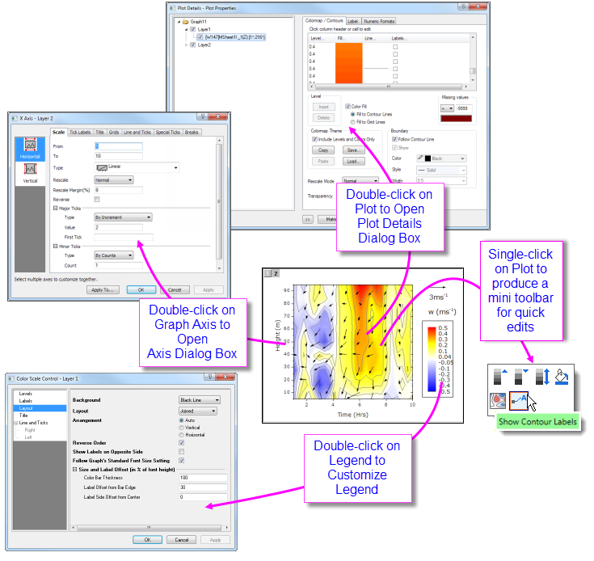
Einführung
Dieses Kapitel führt Sie in verschiedene Aspekte der benutzerdefinierten Diagrammanpassung ein. Alle Origin-Diagramme werden aus einer Diagrammvorlage erstellt. Wenn das Diagramm, das Sie erstellen, ein für seinen Typ standardmäßiges ist, sind die in der Diagrammvorlage gespeicherten Optionen möglicherweise vollkommen angemessen, um ein sinnvoll aussehendes Diagramm zu erstellen. Das Erstellen von Diagrammen wurde grundlegend im letzten Kapitel Grafische Darstellung beschrieben.
Früher oder später werden Sie jedoch Anmerkungen hinzufügen, Achsenskalierungen oder Zeichnungsfarben ändern wollen. Daher zielt dieses Kapitel darauf ab, Ihnen einige von Origins Hilfsmitteln und Methoden der benutzerdefinierten Anpassung von Diagrammen nahe zu bringen und Sie auf Ressourcen hinzuweisen, die Ihnen dabei helfen können, komplexere Anpassungsaufgaben von Diagrammen zu bewerkstelligen.
Wir beginnen mit der Beschreibung der Symbolleisten für die benutzerdefinierte Anpassung von Diagrammen, da diese Symbolleisten über Hilfsmittel verfügen, die häufig für schnelle Modifikationen von Diagrammelementen verwendet werden.
Andockbare Symbolleisten
Nützliche Symbolleistenschaltflächen für Aufgaben der benutzerdefinierten Diagrammanpassung:
Menüs, Dialoge und Schaltflächen zur Anpassung von Diagrammen
Viele schnelle Diagrammanpassungen können mit Origins Minisymbolleisten für die grafische Darstellung gemacht werden. Auf komplexere Anpassungsoptionen kann über Befehle in den Menüs Format und Grafik zugegriffen werden. Die folgende Tabelle listet die Schlüsselmenübefehle und -dialoge plus einige Symbolleistenschaltflächen auf, die verwendet werden, um Diagramme benutzerdefiniert anzupassen.
| Aufgabe |
Dialogname |
Methode |
| Diagrammseite, Layer oder Datenzeichnung benutzerdefiniert anpassen |
Dialog Details Zeichnung Dialog Details ZeichnungDiagramme, Details Zeichnung
|
- Doppelt auf Seite, Layer oder Datenzeichnung klicken
- Menü Format: Seite
- Menü Format: Layer
- Menü Format: Zeichnung
Siehe Seite, Layer und Datenzeichnungen benutzerdefiniert anpassen.
|
| Achsen benutzerdefiniert anpassen, |
Dialog AchsenDialog Achsen Diagramme, Achsen benutzerdefiniert anpassen
|
- Doppelt auf Achsen oder Hilfsstrichsbeschriftungen klicken
- Menü Format: Achsen
- Menü Format: Achsenbeschriftung
- Menü Format: Achsentitel
Siehe Diagrammachsen benutzerdefiniert anpassen.
|
|
Eine Standardlegende hinzufügen
(die meisten 2D-Diagramme)
|
N/A
|
- Klicken Sie auf die Schaltfläche Legende rekonstruieren (Strg + L)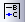 der Symbolleiste Objekt zu Diagramm hinzufügen.
- Klicken Sie mit der rechten Maustaste auf das Legendenobjekt und wählen Sie Legende: Legende rekonstruieren.
- Wählen Sie Grafik: Legende: Legende rekonstruieren im Hauptmenü.
Siehe Diagrammlegenden.
|
| Legende benutzerdefiniert anpassenLegende, benutzerdefiniert anpassen Diagramme, Legende benutzerdefiniert anpassenLegende aktualisieren |
Dialog (Textobjekt -) Legende
|
- Drücken Sie die Strg-Taste und klicken Sie doppelt auf den Legendentext.
Siehe Die Registerkarte Text (Eigenschaften Textobjekt).
|
|
Dialog Legende aktualisieren
|
- Klicken Sie mit der rechten Maustaste auf die Legende und wählen Sie Legende: Legende aktualisieren oder wählen Sie Grafik: Legende: Legende aktualisieren.
Siehe Der Dialog legendupdate.
|
|
Registerkarte Legenden/Titel auf der Ebene Seite des Dialogs Details Zeichnung
|
- Klicken Sie doppelt auf die weiße Fläche innerhalb des Diagrammfensterrahmens (aber außerhalb der Datenzeichnung) und wechseln Sie dann zur Registerkarte Legenden/Titel.
- Wählen Sie Format: Seite und gehen Sie zur Registerkarte Legenden/Titel.
Siehe Die Registerkarte Legenden/Titel (Details Zeichnung).
|
| Eine Farbskala hinzufügen (farbkodierte Zeichnungen) |
N/A
|
- Klicken Sie auf die Schaltfläche Farbskala hinzufügen auf der Symbolleiste Objekt zu Diagramm hinzufügen.
Siehe Farbskalen.
|
| Eine Farbskala hinzufügen (Zeichnungen mit abgebildeter Symbolgröße) |
N/A
|
- Klicken Sie auf die Schaltfläche Blasenskala hinzufügen
 auf der Symbolleiste Objekt zu Diagramm hinzufügen. auf der Symbolleiste Objekt zu Diagramm hinzufügen.
Siehe Blasenskala.
|
| Mehrere Diagrammfenster zu einem zusammenfügen Diagramme, zusammenfügen |
Dialog Grafikfenster zusammenfügen
|
- Menü Grafik: Grafikfenster zusammenfügen.
Siehe Diagramme zusammenfügen und anordnen (Tutorial) und Der Dialog Grafikfenster zusammenfügen.
|
Diagramme mit mehreren Layern anpassen:
Layer in der Größe verändern, verschieben, austauschen, ausrichten oder hinzufügen |
Dialog Layerverwaltung Diagramme, Layeranpassungen
|
- Menü Grafik: Layerverwaltung
- Klicken Sie mit der rechten Maustaste auf das Layersymbol.
Siehe Layerverwaltung - Schnellstart.
|
Einfache Anpassung von Diagrammen mit mehreren Layern:
Layer anordnen und/oder in der Größe verändern |
Dialog Layer anordnen Diagramme, Layeranpassungen
|
- Menü Grafik: Layer anordnen
- Klicken Sie mit der rechten Maustaste auf das Layersymbol.
|
| Einstellungen als Diagrammvorlage speichern |
Dialog Template speichern unter
|
- Menü Datei: Template speichern unter
- Mit der rechten Maustaste auf den Fenstertitel klicken und Template speichern unter wählen Diagramme, benutzerdefinierte Vorlagen speichern
Siehe Grundlagen der Diagrammvorlagen.
|
Diagrammvorlagen verwalten,
Zeichnungen zu einer Vorlage hinzufügen |
Vorlagenbibliothek Diagramme, Vorlagenbibliothek
|
- Menü Zeichnen > mit Template (Arbeitsblatt oder Matrixblatt ist aktiv)
Siehe Die Diagrammvorlagenbibliothek.
|
| Einstellungen als Diagrammdesign speichern |
Dialog Format als Design speichern Diagramme, Format als Design speichern
|
- Klicken Sie mit der rechten Maustaste und wählen Sie im Kontextmenü Format als Design speichern (Diagramm ist aktiv).
Siehe Formate in einem Design speichern.
|
| Diagrammdesigns verwalten: Designs bearbeiten, kombinieren, anwenden, als Systemdesign festlegen Diagramme, Format als Design speichern |
Dialog Designs verwalten Designs verwalten
|
- Einstellungen: Designs verwalten > Registerkarte Diagramm
- Schnellzugriff über F7
Siehe Designs verwalten.
|
Schnellbearbeitung: Minisymbolleisten und Objektverwaltung
Auch wenn die Dialoge aus dem vorherigen Abschnitt vollständigen Zugriff auf die Diagrammeigenschaften gewähren, sind die Einstellungen manchmal etwas vergraben und schwer zu finden. Oft ist es am praktischsten, Bearbeitungsaufgaben mit Hilfe der Schaltflächen der Minisymbolleisten oder den Kontextmenübefehlen der Objektverwaltung durchzuführen -- oder einer Kombination der beiden Optionen.
Minisymbolleisten für Diagrammbearbeitung
Die meisten Origin-Diagramme unterstützen jetzt eine Reihe von Hilfsmitteln zur "schnellen Bearbeitung" durch interaktives Modifizieren von allgemeinen Diagrammobjekteigenschaften. Die Hilfsmittel sind kontextsensitiv, so dass -- abhängig von (1) der Stelle, auf die Sie im Diagrammfenster klicken, (2) dem ausgewählten Objekt und davon, (3) ob Sie eine einzelne Zeichnung oder eine Zeichnungsgruppe ausgewählt haben -- Sie verschiedene Hilfsmittel zur Verfügung haben, um Ihre Auswahl zu bearbeiten.

- Die Anzeige der Minisymbolleisten im Arbeitsbereich wird über Ansicht: Minisymbolleisten gesteuert.
- Es gibt fünf Ebenen, d. h. fünf Gruppen der Diagrammeigenschaften, die mit Minisymbolleisten bearbeitet werden können: Seite, Layer, Zeichnung, Text- oder Zeichenobjekte und Diagrammachsen.
- Beim Bearbeiten von gruppierten Zeichnungen markiert ein einzelner Klick eine einzelne Zeichnung. Die Minisymbolleiste zeigt zwei Registerkarten an -- eine zum benutzerdefinierten Anpassen der Gruppe, die anderen zum benutzerdefinierten Anpassen der einzelnen Zeichnung.
- 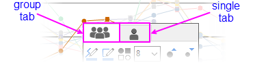
- Die meisten Minisymbolleisten verfügen über die Schaltfläche "Eigenschaften"
 , die einen zugehörigen Origin-Dialog aufruft, in dem Sie die Gesamtheit der verfügbaren Bedienelemente finden.
, die einen zugehörigen Origin-Dialog aufruft, in dem Sie die Gesamtheit der verfügbaren Bedienelemente finden.
 | Wenn Sie Ihre Auswahl nicht verändert haben, können Sie eine Minisymbolleiste einmalig wiederherstellen, nachdem sie ausgeblendet wurde, indem Sie die SHIFT-Taste drücken. |
| Wenn Sie die Auswahl einzelner Diagrammlayer, Zeichnungen und Diagrammobjekte mit der Schaltfläche Auswählbar der Minisymbolleiste deaktivieren, bleiben diese Elemente in der Objektverwaltung auswählbar. Um die Auswählbarkeit des Diagrammfensters wiederherzustellen:
- Markieren Sie das Element in der Objektverwaltung und klicken Sie erneut auf die Schaltfläche Auswählbar der Minisymbolleiste (Hinweis: Wenn die Objektverwaltung die Zeichnungen nicht im aktiven Diagrammfenster aufführt, klicken Sie mit der rechten Maustaste auf die Objektverwaltung und wählen Sie Zeichnungen zeigen. Falls die Objektverwaltung nur Zeichnungen zeigt, klicken Sie mit der rechten Maustaste auf sie und wählen Sie Diagrammobjekte zeigen).
- 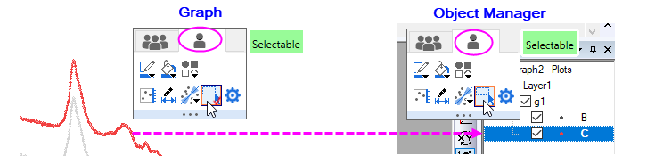
|
Inkrementierende Schaltflächen steuern
Einige Schaltflächen auf der Minisymbolleiste vergrößern oder verringern Eigenschaften um ein Inkrement jedes Mal, wenn Sie auf die Schaltfläche klicken (z. B. Schriftgröße, Drehwinkel, Abstand des Layergitternetzes). In diesen Fällen können Sie diese Inkremente modifizieren, indem Sie den Wert der LabTalk-Systemvariablen bearbeiten.
- 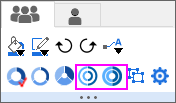

Informationen zu diesen LabTalk-Systemvariablen finden Sie in diesem Appendix in der Origin-Hilfe.
Diagramme mit der Objektverwaltung bearbeiten
Die Objektverwaltung ist ein allgemeines Hilfsmittel zum Bearbeiten von Origin-Fenster, ist aber besonders nützlich beim Bearbeiten von Diagrammfenstern. Wenn ein Diagrammfenster aktiv ist, bietet die Objektverwaltung alternative Ansichten -- dazu klicken Sie mit der rechten Maustaste auf einen leeren Bereich der Objektverwaltung und wählen entweder Zeichnungen zeigen oder Diagrammobjekte zeigen (Strg+Shift+S):
- Zeichnungen zeigen: eine minimierbare hierarchische Liste der Zeichnungen nach Layer, Zeichnungsgruppe etc.
- Diagrammobjekte zeigen: eine minimierbare hierarchische Liste der Fensterobjekte (Legenden, Textobjekte, Bilder etc.) nach Layer
- 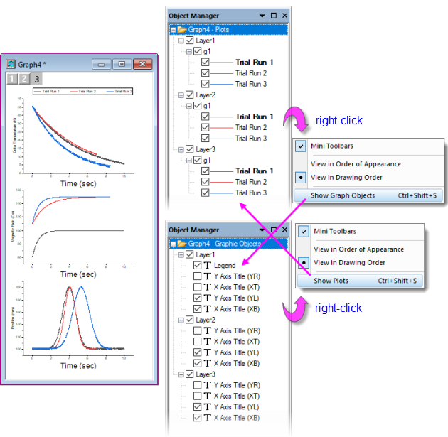
Tipps zur Objektverwaltung:
- Abhängig von der Ansicht Zeichnungen zeigen oder Diagrammobjekte zeigen öffnet ein Rechtsklick auf ein Element ein Kontextmenü mit den jeweiligen Aktionen (z. B. Gruppierung einer Reihe von Zeichnungen aufheben oder eine Zeichnung als erste in einer Zeichnungsgruppe zuweisen).
- Beide Ansichten haben ein Kontrollkästchen neben jedem Element gemeinsam. Wenn dieses aktiviert ist, wird das Element im Diagrammfenster angezeigt. Wenn es deaktiviert ist, wird das Element verborgen.
- Abgesehen vom Öffnen des Dialogs Details Zeichnung, um den Layer umzubenennen, können Sie mit der rechten Maustaste auf das Layersymbol (z. B. Layer1) in der Objektverwaltung klicken und Umbenennen wählen.
- Zusätzliche Tastenkombinationen gewähren einen schnellen Zugriff auf Quelldaten, auf den Dialog Details Zeichnung, das Neuordnen der Zeichnungen oder Objekte und andere relevante Aufgaben wie das Öffnen eines eingefügten Bildes in einem Bildfenster zur weiteren Bearbeitung.
Diagramme mit der Objektverwaltung und Minisymbolleisten bearbeiten
Wenn ein Diagramm aktiv ist und Sie die Diagrammelemente in der Objektverwaltung auswählen, wird eine Minisymbolleiste gezeigt. (Stellen Sie sicher, dass die Option Minisymbolleisten im Kontextmenü Zeichnungen zeigen/Diagrammobjekte zeigen aktiviert ist, wie im Bild oben zu sehen).
Mit den verfügbaren Schaltflächen können Sie schnelle Anpassungen der allgemeinen Diagrammeigenschaften wie Linienfarbe, Liniendicke, Anzeige der Beschriftungen etc. vornehmen.
- 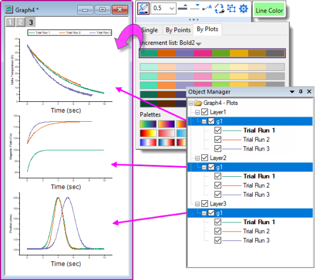
| In der Ansicht Diagrammobjekte zeigen der Objektverwaltung gibt es eine Option im Kontextmenü: Alle mit dem gleichen Namen auswählen. Verwenden Sie diese in Kombination mit den Schaltflächen der Minisymbolleiste (z. B. Schriftgröße), um schnelle Diagrammänderungen durchzuführen. |
Beispiel: 1 Layer, 2 Y-Achsen
Diagramme mit doppeltem Y werden jetzt generell in einem einzelnen Layer unterstützt. Früher bedeuteten zwei unabhängige Y-Achsen "zwei Layer". Seit Origin 2023 können Anwender Diagramme mit doppeltem Y in einem einzelnen Layer erstellen. Dazu verwenden Sie einfach die Diagrammtypvorlagen über die neuen Steuerelemente auf der Bedienoberfläche.
Im folgenden einfachen Beispiel hat der Anwender vier Y-Datensätze gegen einen einzelnen X-Datensatz gezeichnet. Da Werte in zwei der Y-Datensätze eine Größenordnung über den Werten in den anderen beiden sind, werden zwei Zeichnungen "flach" angezeigt und scheinen wenig Variation mit Änderungen in X zu zeigen. Mit einer Kombination von Objektverwaltung und Minisymbolleisten können wir jedoch die "flachen" Zeichnungen auswählen und Auf rechter Y zeichnen. Mit einer geeigneteren Skalierung sehen die Zeichnungn nicht mehr flach aus.
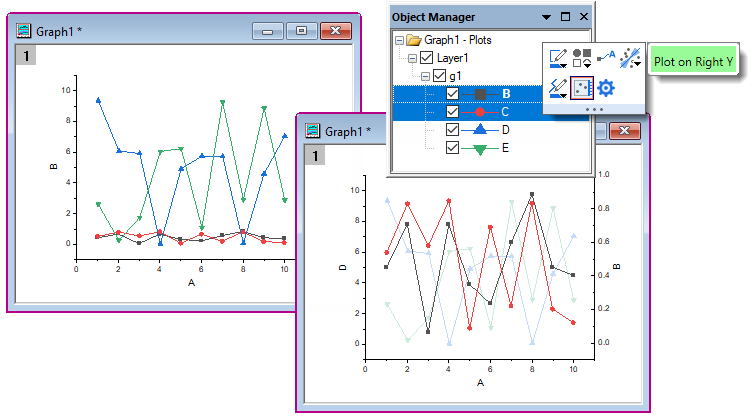
| Zusätzlich zu dem folgenden einfachen Beispiel können Sie das Beispiel eines Violindiagramms mit doppeltem Y mit einzelnem Layer in den Beispielen Ihres Lernzentrums finden, indem Sie F11 drücken und nach "2023" suchen. Origin enthält auch Vorlagen für einfache Fälle. Siehe weitere Informationen im Abschnitt Mehrere Felder/Achsen. |
Seite, Layer und Datenzeichnungen benutzerdefiniert anpassen
Dialog Details ZeichnungGrafiken, Details Zeichnung Ein Grafik- oder Diagrammfenster ist eine Sammlung von Objekten, organisiert in einer hierarchischen Struktur. Wie Sie sehen werden, gibt es eine Reihe von bearbeitbaren Eigenschaften auf den Ebenen Seite, Layer, Datenzeichnung und Datenpunkt.
Die schnelle Formatierung einiger Diagrammeigenschaften kann mit Hilfe der Schaltflächen auf den Minisymbolleisten und andockbaren Symbolleisten durchgeführt werden, wie oben beschrieben. Einen umfangreicheren Zugriff auf die Diagrammeigenschaften haben Sie im Dialog Details Zeichnung von jedem Diagramm.
Um Details Zeichnung zu öffnen:
- Klicken Sie doppelt auf Ihr Diagramm.
- Wählen Sie im Menü Format die Option Seite ..., Layer ... oder Zeichnung ..., um den Dialog Details Zeichnung auf der entsprechenden Ebene zu öffnen.
Die Abbildung unten zeigt ein Beispiel für den Dialog Details Zeichnung.
- Das linke Bedienfeld zeigt die Hierarchie Seite > Layer > Zeichnung als erweiterbare/minimierbare Baumstruktur.
- Das rechte Bedienfeld zeigt die Bedienelemente, strukturiert auf Registerkarten, die sich auf das aktuell im linken Bedienfeld ausgewählte Objekt beziehen.
- Um ein Objekt benutzerdefiniert anzupassen, wählen Sie es im linken Bedienfeld aus und modifizieren seine Eigenschaften auf den verschiedenen Registerkarten im rechten Bedienfeld.
- 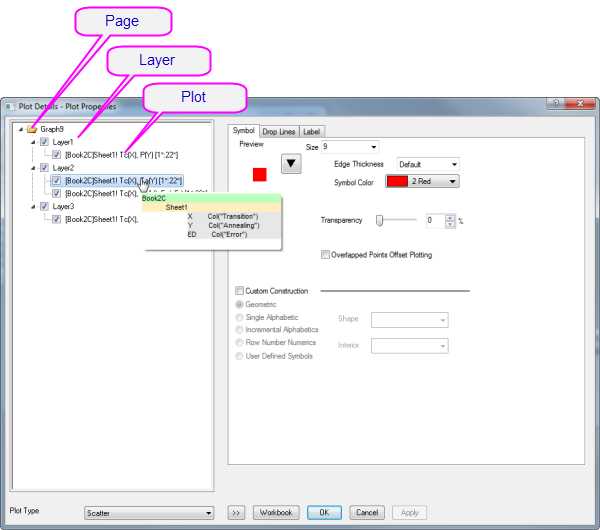
| Ausgewähltes Objekt im linken Bedienfeld |
Rechtes Bedienfeld, Bedienelemente für... |
| Seite |
Einstellungen, die die ganze Seite betreffen -- Drucken/Druckbereich, Zeichenreihenfolge der Layer, Anzeigefarbe der Seite, Legenden/Titel etc. |
| Layer |
Einstellungen, die sich auf den Diagrammlayer beziehen -- Hintergrundfarbe des Layers, Layergröße und Entwurfsmodus, Layeranzeige, Stapeleinstellungen für entsprechende Diagrammtypen Einige Diagrammtypen verfügen über zusätzliche Registerkarten/Bedienelemente, die speziell auf den Diagrammtyp ausgerichtet sind. |
| Zeichnung |
Zeichnungsspezifische Eigenschaften Die Registerkarten und Bedienelemente variieren nach Diagrammtyp (Punktdiagramme haben z. B. eine Registerkarte Symbol mit Bedienelementen, die sich auf Punktsymbole beziehen, oder Liniendiagramme haben eine Registerkarte Linie mit Bedienelemente, die sich auf Linien beziehen). Alles rund um eine bestimmte Datenzeichnung -- Farbe, Füllmuster, Farbabbildung, Beschriftung -- finden Sie auf dieser Ebene im Dialog Details Zeichnung. |
| Datenpunkt |
Eigenschaften, die auf benutzerdefinierte "spezielle Punkte" angewendet werden. Verfügbar für jede Zeichnung, in der einzelne, separate Punkte gezeichnet sind (Punkt, Linie + Symbol, Säulen/Balken etc.). Die Registerkarten und Bedienelemente ähneln im Allgemeinen denen auf der Ebene Zeichnung, aber jede Eigenschaft, die Sie auf der Ebene eines speziellen Punkts bestimmen, wird nur auf diesen Punkt angewendet. |
: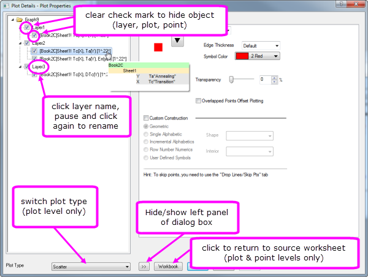
| Verhindern Sie die Skalierung von Text- und Beschriftungsobjekten, wenn Layer in der Größe verändert werden, indem Sie zur Registerkarte Größe des Dialogs Details Zeichnung (Layerebene) wechseln und den Festen Faktor auf 1 setzen. |
Gruppierte Zeichnungen benutzerdefiniert anpassen
Gruppierte Zeichnungen benutzerdefiniert anpassen
 | Seit Origin 2020 wurde eine Änderung am Auswahlverhalten vorgenommen, die gruppierte Zeichnungen betrifft. Jetzt wählt ein einzelner Klick auf eine Zeichnung diese Zeichnung aus. Ein zweiter Klick (oder Strg + Klick) wählt einen einzelnen Punkt aus. Shift + Klick wählt die gesamte Gruppe aus. Beachten Sie, dass bei Verwendung der neuen Minisymbolleisten ein einzelner Klick auf eine Zeichnungsgruppe Hilfsmittel zum Bearbeiten der Zeichnungsgruppe oder die einzelne ausgewählte Zeichnung anzeigt. Um zum alten Auswahlverhalten zurückzukehren, setzen Sie @GSM = 0.
|
Wenn Sie mehrere Datenbereiche in einem einzelnen Diagrammlayer auswählen und zeichnen, werden die Zeichnungen innerhalb des Layers gruppiert. Allgemein kann man sagen, dass Zeichnungen innerhalb einer Gruppe automatisch differenziert werden, indem ihnen Stile zugewiesen werden, die aus einer oder mehreren benutzerdefinierbaren "Inkrementlisten" erzeugt wurden, eine für jede Zeichnungseigenschaft (Symbolform, Symbolfarbe, Linienstil etc.).
Standardmäßig sind einige Eigenschaften so konfiguriert, dass sie "um eins" inkrementieren (die Linienfarbe wird z. B. gemäß der Farbliste "Candy" bestimmt und jeder Folgezeichnung wird die nächste Farbe in der Liste zugewiesen), und andere, dass sie nicht inkrementieren (der Linienstil ist z. B. für jede Zeichnung durchgezogen). Letzten Endes wird dies allerdings vom Anwender gesteuert. In jedem Fall werden diese Inkrementlisten für jede Eigenschaft mit der Diagrammvorlage (.oggu) oder der Designdatei (.oth) gespeichert, so dass Sie sie später verwenden können, um Diagramme mit dem gleichen Aussehen ganz einfach neu zu erstellen.
- 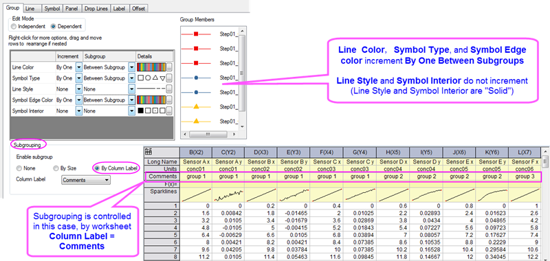
Das oben stehende Bild zeigt die Einstellungen der Registerkarte Gruppe für ein Punkt-Liniendiagramm in der oberen linken Ecke. Auf der Registerkarte Gruppe listet die erste Spalte Linienfarbe, Symboltyp, Linienstil Symbolrandfarbe und Symbolinneres auf. Die Eigenschaften Linienfarbe, Symboltyp und Symbolrandfarbe sind auf das Inkrement Durch Eins Zwischen Untergruppen gesetzt (die Untergruppierung erfolgt mit Hilfe der Spalte Kommentare), während Linienstil und Symbolinneres auf Keine festgelegt sind (sie variieren nicht).
Wie oben erwähnt, ist diese Anordnung vollständig benutzerdefiniert anpassbar. Sie können die Anpassungen mit der Diagrammvorlage speichern:
Objektverwaltung mit gruppierten Zeichnungen verwenden
- Um eine einzelne Zeichnung zu markieren und andere (gruppiert oder nicht gruppiert) im Layer abzublenden, klicken Sie in der Objektverwaltung auf die Zeichnung. Durch das Markieren einer Zeichnung in der Objektverwaltung wird die Zeichnung im Diagrammfenster hervorgehoben, während die anderen Zeichnungen abgeblendet werden.
- 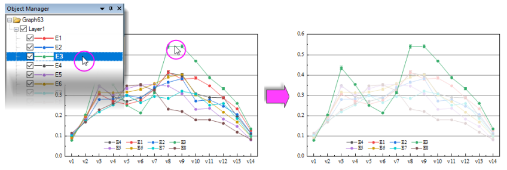
- Um Zeichnungen im Layer neu zu ordnen, ziehen Sie ein Zeichnungssymbol innerhalb der Gruppe; oder klicken Sie mit der rechten Maustaste auf die Zeichnung (in der Objektverwaltung) und wählen Sie Nach oben verschieben oder Nach unten verschieben.

- Zum Gruppieren oder Aufheben der Gruppierung von Datenzeichnungen im Layer klicken Sie mit der rechten Maustaste auf das Gruppensymbol ("gN") und wählen Sie Gruppe auflösen. Um Zeichnungen im Layer zu gruppieren, klicken Sie mit der rechten Maustaste auf eine Zeichnung und wählen Sie Als Gruppenanfang festlegen.
- 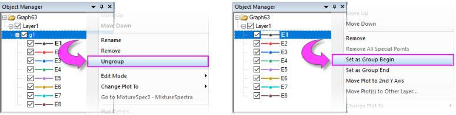
- Um eine Zeichnung von einer Gruppe in eine andere zu verschieben, ziehen Sie die Zeichnung in die andere Gruppe.
- Um eine Reihe von Zeichnungen aus der Gruppe zu verschieben, klicken Sie mit der rechten Maustaste auf die letzte Zeichnung, die Sie in der Gruppe behalten möchten, und wählen Sie Als Gruppenende festlegen.
- Um eine Zeichnung aus einem Layer (und der Grafik) zu entfernen, klicken Sie mit der rechten Maustaste auf die Zeichnung und wählen Sie Entfernen.
- Um eine Zeichnung zu einer zweiten Y-Achse oder in einen anderen Layer zu verschieben, klicken Sie mit der rechten Maustaste auf die Zeichnung in der Objektverwaltung und wählen Sie Zeichnung zur zweiten Y-Achse verschieben oder Zeichnung(en) in anderen Layer verschieben.
Diagramme mit mehreren Diagrammen benutzerdefiniert anpassen
Der Diagrammlayer ist ein grundlegendes Konzept in Origin. Es stellt einen primären Baustein der anspruchsvollsten Origin-Diagramme dar (z. B. kann ein Diagramm mit Y-Achsen auf der linken und rechten Seite durch Überlagerung von einem Layer mit einem anderen erzeugt werden, wobei die beiden Layer sich eine gemeinsame X-Achse teilen). Während der Diagrammlayer im Grunde eine eigenständige Einheit ist, ist es zuweilen wünschenswert, Abhängigkeiten zwischen den Layern zu erstellen:
- Eine Art der Abhängigkeit ist, was wir die "Verknüpfung" der Layer nennen. Hierbei werden räumliche Beziehungen oder Beziehungen zwischen der Achsenskalierungswerten geschaffen. Weitere Informationen zum Verknüpfen von Diagrammlayern können Sie unten lesen.
- Eine weitere Form der Abhängigkeit basiert auf der sogenannten "Allgemeinen Anzeige". Diese ist in den Situationen am nützlichsten, in denen wir mehrere ähnliche Feldern in einem Diagramm haben und z. B. die Hintergrundfarbe von jeder Zeichnung oder die Zeichnungsfarben in jedem Layer ändern möchten.
Auf Zeichnungsebene im Dialog Details Zeichnung finden Sie eine Registerkarte Layer mit Bedienelementen, die alle Layer innerhalb einer gegebenen Diagrammseite beeinflussen. Die Bedienelemente der Allgemeinen Anzeige können verwendet werden, um die gleichzeitige Bearbeitung Layer-, Zeichnungs- und Achseneigenschaften von Diagrammen mit mehreren Layern durchzuführen. Im folgenden Beispiel haben wir zum Beispiel ein Trellis-Diagramm mit zwei Layern -- die zwei Layer sind notwendig, da es eine linke und eine rechte Y-Achse mit völlig unterschiedlichen Skalierungen gibt. Als einfache Demonstration haben wir die Bedienelemente der Allgemeinen Anzeige verwendet, um zu beiden Layern gleichzeitig eine Hintergrundfarbe hinzuzufügen. Wir könnten das Gleich ohne die Bedienelemente der Allgemeinen Anzeige erreichen, aber dies hätte zweimal so viel Arbeit gemacht -- Hintergrundfarbe von Layer 1 festlegen, dann Hintergrundfarbe von Layer 2 festlegen.
- 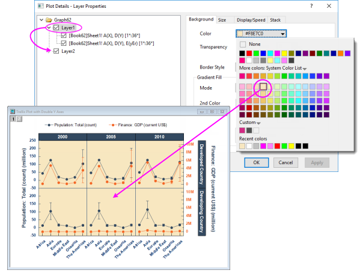
Dies war eine einfache Demonstration, aber wir können die Bedienelemente der Allgemeinen Anzeige genauso auf komplexere Mischungen aus Layer-, Zeichnungs- und Achseneigenschaften anwenden. Einige von Origins Standarddiagrammvorlagen für mehrere Layer haben die Elemente der Allgemeinen Anzeige standardmäßig aktiviert. Wenn Sie mit Diagrammen arbeiten, die mehrere Felder haben, möchten Sie vielleicht Format: Seite wählen, auf die Registerkarte Layer im Dialog Details Zeichnung klicken und die Einstellungen der Allgemeinen Anzeige überprüfen. Siehe unter Allgemeine Anzeige weitere Informationen.
| Das Bedienelement Anwenden auf der Allgemeinen Anzeige unterstützt jetzt das Einschließen bzw. Ausschließen bestimmter Layer von den Anpassungen der Allgemeinen Anzeige. Sie könnten beispielsweise ein Diagramm mit 4 Feldern haben. Jedes Feld enthält einen eingesetzten Layer. Mit diesem Bedienelement wäre es nun möglich, den eingesetzten Layern eine gemeinsame Hintergrundfarbe zu geben, ohne dass die gleiche Hintergrundfarbe auf die 4 primären Layer (Felder) angewendet werden müssen. Siehe unter Allgemeine Anzeige weitere Informationen. |
Spezielle Punkte: Einen einzelnen Datenpunkt benutzerdefiniert anpassen
Diagramme, Datenzeichnungen benutzerdefiniert anpassen Für einige Diagrammtypen wie Punkt-, Säulen- oder Kreisdiagramme können Sie die Anzeigeeigenschaften eines einzelnen Datenpunkts modifizieren.
Um einen einzelnen Punkt benutzerdefiniert anzupassen:
- Klicken Sie zweimal (langsam) oder drücken Sie Strg und klicken Sie einmal auf einen Datenpunkt, um diesen zu markieren. Verwenden Sie die Minisymbolleisten, um die Eigenschaften des Datenpunkts zu bearbeiten oder klicken Sie auf die verfügbaren Schaltflächen auf den Symbolleisten Stil bzw. Format.
- Zugriff auf eine größere Auswahl von Anpassungsoptionen erhalten Sie (a) durch Doppelklick auf den ausgewählten Punkt oder (b) durch Strg + Doppelklick auf den nicht ausgewählten Datenpunkt. Beides ruft den Dialog Details Zeichnung auf mit Fokus auf der Bearbeitung des Datenpunkts (identifiziert anhand seiner Zeilenindexnummer im linken Bedienfeld von Details Zeichnung). Verwenden Sie dann die Bedienelemente auf den Registerkarten im rechten Bedienfeld, um das Aussehen des Datenpunkts zu verändern, Ankerlinien und Datenbeschriftungen hinzuzufügen etc. Änderungen, die Sie an dem speziellen Punkt vornehmen, haben keine Wirkung auf das Erscheinungsbild der anderen Punkte in derselben Zeichnung.
- 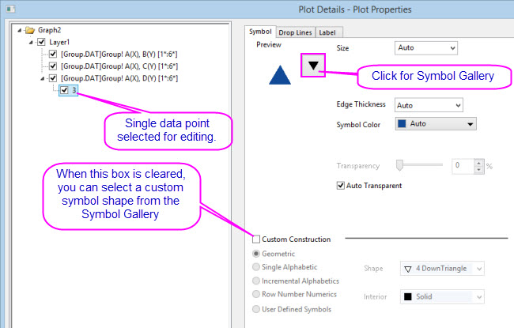
Um Anpassungen, die an einem einzelnen Datenpunkt vorgenommen wurden, zu entfernen:
- Klicken Sie mit der rechten Maustaste auf den einzelnen Punkt im linken Bedienfeld des Dialogs Details Zeichnung und wählen Sie Löschen.
- Klicken Sie im Diagrammfenster auf den einzelnen Punkt, um ihn auszuwählen, und drücken Sie dann Entfernen auf der Tastatur.
Der Punkt selbst wird nicht gelöscht. Nur der benutzerdefinierte Stil wird entfernt und der Punkt kehrt zum Stil der übergeordneten Datenzeichnung zurück.
| Das Hinzufügen eines speziellen Punkts am Anfang oder Ende eines Diagramms ist nicht immer einfach, aber es gibt eine einfache, kaum fehleranfällige Methode:
- Wählen Sie einen speziellen Punkt irgendwo auf der Zeichnung. Klicken Sie dann doppelt auf den Punkt, um den Dialog Details Zeichnung zu öffnen.
- Klicken Sie im linken Bedienfeld von Details Zeichnung In the einmal auf die Indexzahl des Punktes und warten Sie, bis die Indexzahl bearbeitbar wird.

- Um den speziellen Punkt zum ersten Punkt in der Zeichnung hinzuzufügen, geben Sie Begin ein; um ihn zum letzten Punkt hinzuzufügen, geben Sie End ein. Wenn Sie die Indexzahl des ersten und letzten Punktes kennen, können Sie diese stattdessen eingeben.
- Klicken Sie außerhalb des Bearbeitungsfelds. Passen Sie den speziellen Punkt weiter nach Bedarf an und klicken Sie dann auf Anwenden oder OK, um Details Zeichnung zu schließen. Der spezielle Punkt wird zum Anfang oder Ende Ihrer Zeichnung hinzugefügt.
|
Diagrammachsen benutzerdefiniert anpassen
Dialog Achsen Diagramme, Achsen benutzerdefiniert anpassen Viele allgemeine Änderungen der Achseneigenschaften können schnell über die Schaltflächen der Minisymbolleisten durchgeführt werden. Klicken Sie auf ein zu bearbeitendes Element.
- 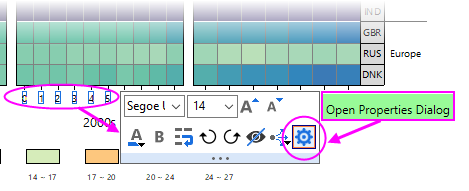
Öffnen Sie den Dialog Achsen für komplexere Änderungen der Achseneigenschaften:
- über die Minisymbolleiste der Achse> Dialog Eigenschaften öffnen.
- über das Origin-Menü > Format: Achsen.
Achsen mit Minisymbolleisten benutzerdefiniert anpassen
Schnelle Anpassungen der Achseneigenschaften können Sie über Origins Minisymbolleisten der Achsen vornehmen. Wie mit allen Minisymbolleistten variieren die Hilfsmittel nach Diagrammtyp und ausgewähltem Objekt. Beachten Sie zum Beispiel, dass das Klicken auf eine Diagrammachselinie eine andere Auswahl an Schaltflächen aufruft als das Klicken auf die Beschriftungen der Achsenhilfsstriche.
- 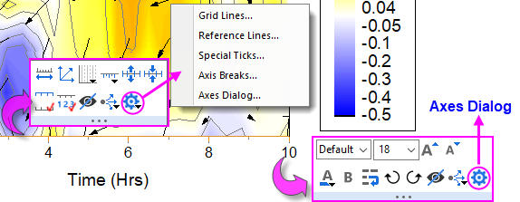
Beachten Sie, dass das Klicken auf die "Zahnrad"schaltfläche auf der Minisymbolleiste der Achsenlinie ein Popupmenü mit vereinfachten "Minidialogen" für Elemente der Achsenlinie aufruft. Zugriff auf alle Achseneinstellungen erhalten Sie durch Klicken auf Dialog Achsen auf beiden Symbolleisten.
Achsen mit dem Dialog Achsen benutzerdefiniert anpassen
Alle Anpassungen der Diagrammachsen können im Dialog Achsen festgelegt werden. Klicken Sie auf die "Zahnrad"schaltfläche der Minisymbolleiste und wählen Sie Dialog Achsen oder klicken Sie doppelt auf die Diagrammachse oder die Beschriftungen der Hilfsstriche. Dies öffnet den Dialog Dialog Achse - Layer N.
Dieses Bild zeigt den auf Registerkarten aufgebauten Dialog der Achsen, der von den meisten 2D- und 3D-Diagrammen verwendet wird.
- 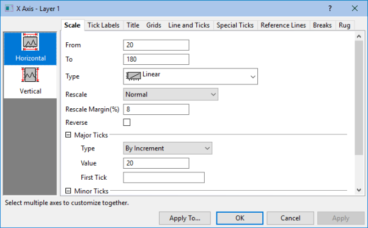
- Im linken Bedienfeld können Sie ein oder mehrere Symbole auswählen (halten Sie zum Auswählen von mehreren Symbolen die Strg-Taste gedrückt), um festzulegen, welche Achse(n) benutzerdefiniert angepasst werden sollen. Wechseln Sie dann zur gewünschten Registerkarte und wählen Sie Ihre Optionen.
- Klicken Sie auf die Schaltfläche Anwenden auf, um die Achsenformateinstellungen der aktuell ausgewählten Achse auf eine andere Achse anzuwenden.
| Tab |
Bedienelemente für |
| Skalierung |
Skalierungsbereich der Werte, Skalierungstyp, Modus der Neuskalierung, umgekehrte Skalierung sowie große und kleine Hilfsstriche |
| Beschriftungen der Hilfsstriche |
Anzeige- und Formatoptionen für die Beschriftung von großen und kleinen Hilfsstrichen, einschließlich benutzerdefinierte Beschriftung mit Hilfe von LabTalk-Substitution bzw. mathematischen Ausdrücken. Weitere Informationen zum benutzerdefinierten Formatieren von numerischen Daten, einschlie0lich der Anzeige von Prozentangaben, Brüchen, Pi und geografischen (Längen-/Breitengrad) Formaten finden Sie unter Benutzerdefinierte Formate in Origin.
| Die Schriftgröße der großen und kleinen Hilfsstrichsbeschriftungen können separat skaliert werden (Dialog Achsen > Beschriftungen der Hilfsstriche > Beschriftung kleiner Hilfsstriche > Schriftskalierer (%)).
- 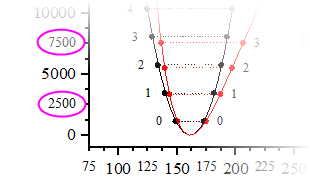
|
|
| Titel |
Achsentitel (häufig mit Hilfe von Variablennotation festgelegt) und Schriftarten Beachten Sie, dass Sie den Achsentitel direkt bearbeiten können, indem Sie doppelt auf das Textobjekt in dem Diagramm klicken. |
| Gitternetze |
Anzeige und Eigenschaften der Gitternetzlinien bei großen und kleinen Hilfsstrichen bearbeiten festlegen |
| Linie und Hilfsstriche |
Globale Anzeigeoptionen für Achsenlinie und -hilfsstriche für alle Achsen festlegen |
| Spezielle Hilfsstriche |
Sie können spezielle Hilfssstrichsbeschriftungen positionieren. |
| Referenzlinien |
Referenzlinien sind optionale Linien, die Sie zu Ihrer Grafik hinzufügen, entweder zum Hervorheben oder zum Markieren von einigen wichtigen statistischen Kennwerten. Außerdem können sie als Paare zusammengestellt werden, um einen Teil Ihrer Grafik mit Farbe zu füllen (z. B. "Rezessionsbalken" in Diagrammen zu Finanzdaten).
| - Sie können Bereiche mit Namen verwenden, um Referenzlinien in einem Diagramm zu platzieren.
- Sie können einen Standardlinienstil für Referenzlinien festlegen -- entweder im Dialog Referenzlinien oder in einem benutzerdefinierten Diagramm --, indem Sie mit der rechten Maustaste auf die Referenzlinie klicken und Als Standardlinienstil festlegen wählen.

|
|
| Unterbrechungen |
Linienunterbrechungen aktivieren und jede Unterbrechung konfigurieren |
| Hinweis: Weitere Informationen zur benutzerdefinierten Anpassung von Achsen und zu weiteren Achsenbedienelemente für spezialisierte Diagrammtypen (z.B. Polar, Ternär, Radar etc.) finden Sie unter: Hilfe: Origin: Origin-Hilfe > Grafische Darstellung > Diagrammachsen
|
Diagrammfarben benutzerdefiniert anpassen
Origin wird mit einer Reihe von installierten Farblisten oder -paletten ausgeliefert. Wenn Sie lieber Ihre eigenen Farblisten erstellen oder eine Standardauswahl von Paletten haben und diese auf Origin übertragen möchten, dann stehen Ihnen dafür eine Reihe von Hilfsmittels in der Software zur Verfügung. Im nächsten Abschnitt Farbmanager können Sie weitere Informationen nachlesen.
Farbmanager
Verwenden Sie den Farbmanager zum Importieren, Erstellen und Organisieren der Farblisten und -paletten, die Sie in Origin verwenden:
Um den Farbmanager zu öffnen:
- Wählen Sie Einstellungen: Farbmanager.
- 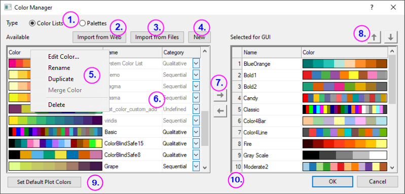
Die folgenden Listennummern entsprechen den Bedienelementen, die im Bild oben dargestellt werden:
- Klicken Sie auf diese Optionen, um die installierten Farblisten oder Paletten anzuzeigen.
- Klicken Sie auf Aus Web importieren, um einen Dialog zu öffnen, in dem Sie eine URL zum Installieren der Paletten festlegen können. Unterstützung von Scribus (.xml), Office Color Table (.soc), Adobe Color (.aco), Adobe Color Table (.act), Adobe Swatch Exchange (.ase) und JASC PaintShopPro (.pal).
- Klicken Sie, um lokal gespeicherte Paletten zu installieren. Unterstützung von Scribus (.xml), Office Color Table (.soc), Adobe Color (.aco), Adobe Color Table (.act), Adobe Swatch Exchange (.ase) und JASC PaintShopPro (.pal).
- Klicken Sie, um den Dialog Farben erzeugen zu öffnen, in dem Sie eine Farbe mit Hilfe einer Reihe von Hilfsmitteln erstellen können: Standardfarbbedienelemente, direkte Einträge von HTML-Code oder Verwendung eines Pipettenwerkzeugs zum Auswählen von Bildschirmfarben. Weitere Informationen können Sie unter Dialog Farben erzeugen in der Origin-Hilfe lesen.
- Klicken Sie mit der rechten Maustaste auf die verfügbaren Liste(n), um:
- um Listen zu löschen oder umzubenennen (Sie können den Namen auch ändern, indem Sie direkt auf den Namen klicken). Abgeblendete Listen sind bereits für die Bedienoberfläche ausgewählt. Die Listen, die für die Bedienoberfläche ausgewählt sind, werden in der Auswahlliste in der gesamten Bedienoberfläche angezeigt -- im Dialog Details Zeichnung, über die Schaltfläche Füllfarbe 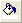 auf der Symbolleiste Stil und über die Schaltfläche Füllfarbe der Minisymbolleiste, wenn eine Zeichnung oder ein spezieller Punkt ausgewählt ist.
- Farben zusammenzufügen. Es werden zwei oder mehr Farblisten/Paletten im Farbmanager ausgewählt. Beachten Sie, dass die Gesamtanzahl der Farben in den ausgewählten Listen/Paletten 256 nicht überschreiten kann (d. h., Farbe zusammenfügen ist nicht verfügbar).
- Verwenden Sie das Listenbedienelement, um Kategorie = Undefiniert, Sequenziell, Divergierend oder Qualitativ zu setzen.
- Verwenden Sie diese Bedienelemente, um Farblisten und Paletten zu der Bedienoberfläche hinzuzufügen oder aus ihr zu entfernen.
- Verwenden Sie diese Bedienoberfläche, um eine ausgewählte Liste oder Palette in den verschiedenen Farblisten der Bedienoberfläche nach oben oder unten zu verschieben.
- Klicken Sie auf Standarddiagrammfarben festlegen, um die Registerkarte Systeminkrementliste des Dialogs Designs verwalten zu öffnen. Hier können Sie die Standardfarben für Ihre Zeichnungen bestimmen.
- Ziehen Sie die Symbole der Listennummern, um die Ordnung der Farblisten auf der Bedienoberfläche neu anzuordnen.
Farbe auf Ihre Diagramme anwenden
Es gibt viele Optionen zum Anwenden von Farbe auf Ihren Diagrammen. Nachfolgend versuchen wir, die Grundlagen zu erläutern, und verweisen an den enstprechenden Stellen zu weiterführenden Quellen.
Liste der Schlüsselthemen zur Diagrammfarbe:
Farben einzeln anwenden
| 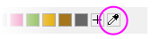 Das Auswählen und Anwenden einer einzelnen benutzerdefinierten Farbe ist einfacher geworden durch das Hilfsmittel "Pipette" auf der Registerkarte Einzeln der Farbauswahl. Das Hilfsmittel der Pipette war zuvor im Dialog Farben erzeugen verborgen. |
Das einzelne Anwenden von Farben bedeutet, dass eine einzelne Farbe auf eine Zeichnung angewendet wird im Gegensatz zum Anwenden von Farbe aus einer Farbliste auf eine Reihe von Zeichnungen. Es handelt sich hierbei um die einfachste Methode, Farbe auf eine einzelne Zeichnung oder auf einen speziellen Punkt anzuwenden. Wählen Sie einfach eine Farbe auf der Registerkarte Einzeln aus -- aus den LabTalk-Farben oben, aus einer ausgewählten Farbliste oder eine benutzerdefinierte bzw. zuletzt verwendete Farbe.
- 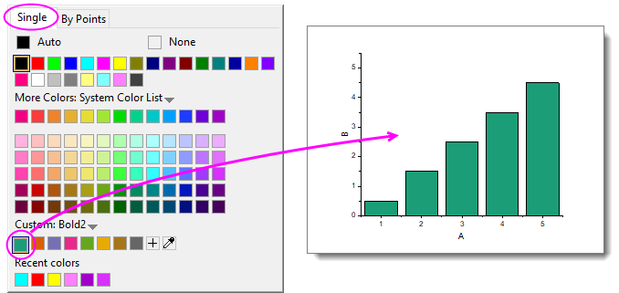
- Wählen Sie eine Zeichnung (z. B. Punktdiagramm) und klicken Sie auf die Schaltfläche Füllfarbe auf der angezeigten Minisymbolleiste.
- Wählen Sie eine Zeichnung und klicken Sie auf die Schaltfläche Füllfarbe auf der Symbolleiste Stil.
- Klicken Sie doppelt auf eine Zeichnung, um den Dialog Details Zeichnung zu öffnen, in dem Sie auf eine Registerkarte auf der rechten Seite klicken (z. B. Registerkarte Symbol für Punktdiagramm) und die Farbe für das Element festlegen können.
- Um einen speziellen Punkt zu erstellen -- d. h. spezielle Merkmale werden einem Datenpunkt in Ihrer Zeichnung zugewiesen --, drücken Sie die Strg-Taste und klicken Sie, um den Punkt zu markieren. Verwenden Sie dann die Minisymbolleiste, die Symbolleiste Stil oder den Dialog Details Zeichnung, um die Farbe für diesen Punkt benutzerdefiniert anzupassen.
-

Farben nach Punkten anwenden
Das Anwenden von Farben Nach Punkten bedeutet im Allgemeinen das Anwenden einer Farbe auf jeden Punkt in einer Zeichnung durch eine von mehreren Möglichkeiten. Die einfachste besteht darin, eine Farbe unter Inkrement von aus einer vordefinierten Farbliste zu wählen und Farben nacheinander jedem Punkt in der Zeichnung zuzuweisen.
- 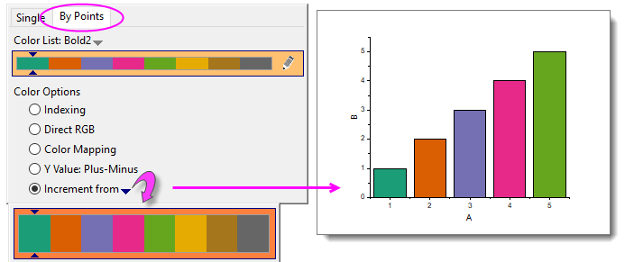
Wie bei den einzelnen Farben können Sie diese Einstellungen mit Hilfe der Bedienelemente in Details Zeichnung anwenden; oder Sie wählen eine Zeichnung aus und Verwenden die Schaltflächen von Füllfarbe auf der frei beweglichen Minisymbolleiste oder der Symbolleiste Stil, die oben in Ihrem Arbeitsbereich angezeigt wird.
Weitere Möglichkeiten nutzen oftmals eine Spalte mit Werten, um Punkten Farben zuzuweisen:
- Index weist eine Punktfarbe durch das Verbinden einer Ganzzahl oder Textzeichenkette (kategorialer Wert) mit unterschiedlichen Farben in einer Liste zu.
- Direkt RGB weist Farbe mit Hilfe eines Wertes zu, der aus Spalten gefüllt mit RGB-Werten abgeleitet wurde.
- Farbabbildung -- wird für 2D-, Kontur- und 3D-Diagramme verwendet -- weist Farben in einer Liste oder Palette Werten quer über einen Bereich aus Y- oder Z-Werten der Zeichnung zu.
Es gibt einige weitere Möglichkeiten, die für einen bestimmten Diagrammtyp (oder eine Diagrammfamilie) spezifisch sind, aber die obenstehende Liste deckt das Meiste von dem ab, was Sie nutzen werden. Weitere Informationen finden Sie unter Datensatz zum Einstellen der Diagrammfarbe verwenden.
Farben nach Zeichnungen anwenden
Sie wenden Farbe Nach Zeichnungen an, wenn Sie einer Reihe von Zeichnungen unterschiedliche Farben zuweisen möchten. Üblicherweise besteht diese Reihe von Zeichnungen aus einer "Zeichnungsgruppe." In einer Zeichnungsgruppe werden Zeichnungseigenschaften, einschließlich die Farbe, jeder Zeichnung mittels Inkrementieren durch eine Stilliste -- Farbe, Linienstil, Symbolform etc. -- zugewiesen.
- 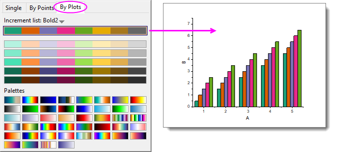
| Seit Origin 2023 gibt es eine neue Möglichkeit, eine Farbpalette auf 3D-Balkendiagramme anzuwenden. Die Methode funktioniert am besten bei 3D-Balken, da es hier möglich ist, eine Farbpalette nach Z-Wert anzuwenden (dies ist nicht das Gleiche wie "Farben nach Zeichnungen anzuwenden", wie oben beschrieben, sondern etwas für 3D-Säulen-/-Balkendiagramme Einzigartiges).
- 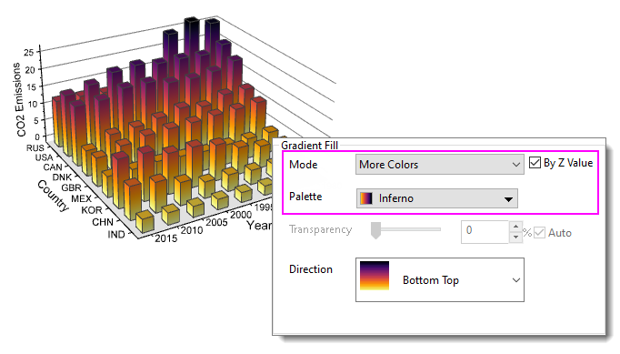
Um mehr über diese Diagrammanwendung herauszufinden, drücken Sie F11 und im Lernzentrum auf die Registerkarte Diagrammbeispiele. Setzen Sie die Auswahlliste auf 3D-Balkendiagramme und suchen Sie nach "Gradient." |
Farbabbildungen auf 2D-, 3D- und Konturdiagramme anwenden
Auch wenn Sie eine Farbliste mit einem Kontur- oder 3D-Diagramm verwenden können, ist es wahrscheinlicher, dass Sie eine Farbpalette verwenden werden. Dies lässt eine größere Farbvariation zu und verleiht 3D-Oberflächen- und 3D-Funktionsdiagrammen ein realistischeres Aussehen.
- 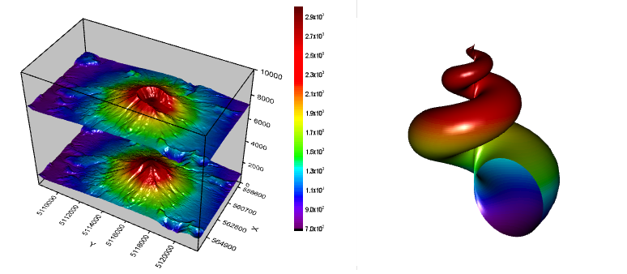
| Sie können per Drag&Drop neue Farbpaletten zu Origin hinzufügen. Unterstützung von Scribus (.xml), Office Color Table (.soc), Adobe Color (.aco), Adobe Color Table (.act), Adobe Swatch Exchange (.ase) und JASC PaintShopPro (.pal). |
Farbabbildung kann auch auf 2D-Diagramme angewendet werden. Dadurch können Sie einen größeren Bereich der Farbvariation auf Datenpunkte anwenden, als es mit Inkrementieren oder Indexieren möglich wäre. Ein gutes Beispiel zum Anwenden einer Farbpalette auf ein Punktdiagramm ist Origins Dichtpunktdiagramm, bei dem üblicherweise Tausende von Streupunkten gezeichnet werden und mit einem Algorithmus die Punktdichte berechnet und die Farbe den jeweiligen Bereichen der Punktdichte zugewiesen wird.

Das Anwenden einer Farbpalette auf ein 3D- oder Konturdiagramm gleicht dem Anwenden von Farbe einzeln, nach Punkten oder nach Zeichnungen. Sie wählen eine Zeichnung -- und verwenden dann die Schaltfläche Palette auf der frei beweglichen Minisymbolleiste oder der Symbolleiste Stil. Sie wählen eine Palette aus.
- 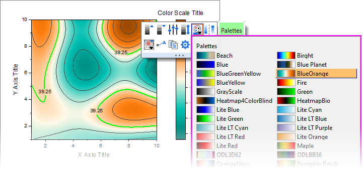
Sie können auch die Bedienelemente auf der Registerkarte Farbpalette/Kontur im Dialog Details Zeichnung verwenden. Diese Registerkarte bietet viele Optionen über das einfache Wählen und Anwenden einer Farbpalette hinaus.
- 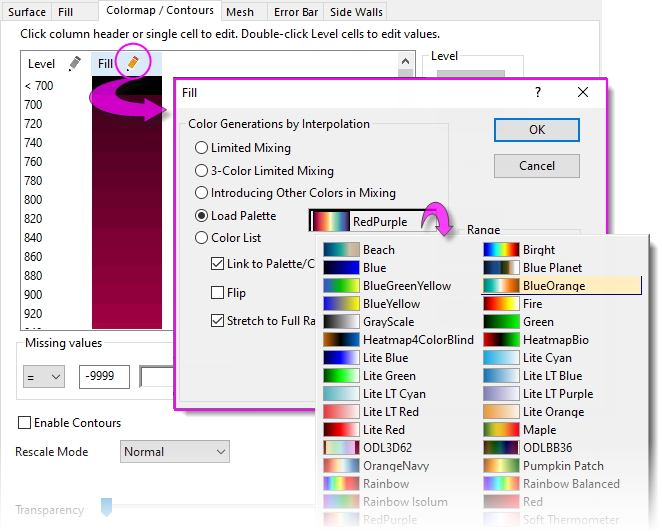
Mehr Informationen zum Anwender von Farbe auf farbkodierte Zeichnungen, einschließlich Kontur- und 3D-Oberflächendiagrammen, siehe diese Themen:
Diagrammlegenden
Standardlegende erstellen
Diagramme, Achsen benutzerdefiniert anpassen Legende, benutzerdefiniert anpassen Diagramme, Legendenanpassung Eine Diagrammlegende wird automatisch erstellt, wenn Sie Daten zeichnen. Für 2D- und einige 3D-Diagrammvorlagen erstellt Origin eine Standardlegende, die (A) Informationen des Zeichnungsstils, die mit der Diagrammvorlage gespeichert sind, mit (B) Datensatzinformationen, die in den Spaltenbeschriftungszeilen des Arbeitsblatts gespeichert sind, kombiniert und das sich ergebende Legendenobjekt auf der Diagrammseite positioniert.
- 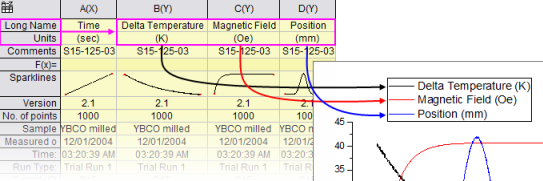
Beachten Sie, dass das Standardlegendenobjekt nicht mit literalem Text und Zeichnungssymbolen, sondern mit LabTalk-Skript erstellt wird.
- Dies ermöglicht, dass das Legendenobjekt dynamisch mit den gezeichneten Daten und den Arbeitsblattmetadaten verknüpft wird, so dass die Legende bei Änderung der Daten oder Metadaten aktualisiert werden kann.
- Da das Erzeugen des Legendenobjekts auf dem Schreiben des Skripts anstatt auf literalen Informationen beruht, können Sie die Anpassungen einer Diagrammvorlage speichern und das Diagramm mit dem zugehörigen Legendenobjekt mit neuen Daten so oft neu erzeugen wie nötig.
Das Legendenskript beruht auf "Substitutionsnotation", um Variablenwerte in lesbare Symbole und Text umzuwandeln. Diese Notation wird sichtbar, wenn Sie doppelt in das Legendenobjekt klicken (als wollten Sie es bearbeiten).

- Sie steuern, welche Metadaten eines Datensatzes beim Erzeugen des Standardlegendentexts verwendet werden, indem Sie die Liste des Übersetzungsmodus von %(1), %(2) auf der Registerkarte Legenden/Titel des Dialogs Details Zeichnung (Format: Seite) festlegen.
- Benutzerdefinierte Zeichenketten können mit Hilfe von LabTalk-Substitution erzeugt werden. Anpassungen können in der Diagrammvorlage zur wiederholten Nutzung gespeichert werden.
| Origin verfügt über das Hilfsmittel Layer an Seite anpassen, das nützlich ist, wenn es um das Anordnen einer Grafik und einer großen Legende mit Textumbruch auf einer Seite geht. |
Standardlegende erstellen und aktualisieren
Diese Tabelle listet die Aufgaben auf, die mit dem Hinzufügen bzw. Aktualisieren der Diagrammlegende verbunden sind, und die Stellen, wo die jeweiligen Bedienelemente für jeden Legendentyp zu finden sind. Legende, Aktualisieren vs. RekonstruierenBevor Sie fortfahren, sollten wir erwähnen, dass es zwei Aktualisierungsmodi für Legenden gibt:
- Das Aktualisieren einer Legende bewahrt jegliche Anpassungen, die Sie an der existierenden Legende vorgenommen haben, einschließlich Anpassungen der Größe und Position und des Legendensymbols und Texts.
- Das Rekonstruieren einer Legende überschreibt alle Anpassungen. Wenn Sie die Legende hinzufügen oder rekonstruieren, erstellen Sie eine Kopie der Legende, die in der Diagrammvorlage gespeichert ist.
| Das Legendenobjekt verschwindet ab und zu. Wenn Sie Ihre Legende nicht hinzufügen oder rekonstruieren können, ist die Wahrscheinlichkeit groß, dass sie bereits existiert, aber sich außerhalb der Seite befindet und nicht sichtbar ist. Versuchen Sie, auf Grafik: Legende: Legendenposition zurücksetzen zu klicken. Das sollte die Standardposition der Legende wiederherstellen. |
Außerdem speichert die Diagrammvorlage eine Einstellung Aktualisierungsmodus der Legende, die bestimmt, wie die Legende aktualisiert wird, wenn Datenzeichnungen zu bzw. aus dem Diagramm hinzugefügt oder entfernt werden. Siehe Aktualisierung der Legende steuern unten.
| Aufgabe |
Methode (bei aktivem Diagramm) |
| Legende hinzufügen oder neu erstellen |
- Menü Grafik: Legende: Legende rekonstruieren
- Schaltfläche Legende erstellen
 (Symbolleiste Objekt zu Diagramm hinzufügen) (Symbolleiste Objekt zu Diagramm hinzufügen)
- Strg + L
| Legendenanpassungen werden nicht mit der Vorlage gespeichert und gehen verloren, wenn Sie rekonstruieren.
|
|
| Legende aktualisieren |
Öffnen Sie den Dialog legendupdate.- Menü Grafik: Legende: Legende aktualisieren
- Klicken Sie mit der rechten Maustaste auf die Legende und wählen Sie Legende: Legende aktualisieren aus.
Hinweis: Das "Aktualisieren" einer Legende überschreibt die Anpassungen der Legende nicht.
|
| Spezielle Legenden benutzerdefiniert anpassen Legende, Kategoriale DatenLegende, Boxdiagramme |
Durch Rechtsklick auf diese speziellen Legenden wird ein Dialog mit Anpassungsoptionen aufgerufen, die auf jeden Legendentyp zugeschnitten sind:
|
| Farbskala hinzufügen Legende, Farbskalen |
Nur verfügbar für Diagramme mit Farbabbildung (z. B. Konturdiagramme)- Klicken Sie auf die Schaltfläche Farbskala hinzufügen (Symbolleiste Objekt zu Diagramm hinzufügen).
- Klicken Sie mit der rechten Maustaste auf den Layer und wählen Neue Farbskala.
- Menü Einfügen: Farbskala hinzufügen
- Wenn Sie mehrere farbkodierte Zeichnungen in einem einzelnen Diagrammfenster haben, können Sie auf jede Zeichnung klicken, um sie auszuwählen, und dann eine entsprechende Farbskala hinzufügen.
|
| Eigenschaften der Farbskala steuern |
Verfügbar, wenn ein Farbskalenobjekt zu einem Diagramm hinzugefügt wurde. Um den Dialog Eigenschaften Farbskala zu öffnen:- Klicken Sie doppelt auf das Farbskalenobjekt.
- Klicken Sie mit der rechten Maustaste auf das Farbskalenobjekt und wählen Sie Eigenschaften.
|
| Blasenskala hinzufügen Legende, Blasenskalen |
Verfügbar für Blasendiagramme oder bei Steuerung der Symbolgröße durch einen Datensatz- Wählen Sie Einfügen: Blasenskala.
- Klicken Sie mit der rechten Maustaste auf den Layer und wählen Neue Blasenskala.
- Klicken Sie auf die Schaltfläche Farbskala hinzufügen (Symbolleiste Objekt zu Diagramm hinzufügen).
- Klicken Sie mit der rechten Maustaste auf die Legende, um Blasenskala hinzufügen im Kontextmenü auszuwählen.
|
| Blasenskala steuern |
Verfügbar, wenn ein Blasenskalenobjekt zu einem Diagramm hinzugefügt wurde. Um den Dialog Steuerung der Blasenskala zu öffnen:
- Klicken Sie doppelt auf das Blasenskalenobjekt.
- Klicken Sie mit der rechten Maustaste auf das Blasenskalenobjekt und wählen Sie Eigenschaften.
|
| Der Dialog legendupdate und die Registerkarte Legende/Titel auf Seitenebene des Dialogs Details Zeichnung haben beide eine Auswahlliste Automatischer Übersetzungsmodus der Legende, der bestimmt, welche Arbeitsblattmetadaten (z. B. Spalte Langname, Kommentare etc.) verwendet werden, um den Legendentext zu erzeugen. Eine Liste der benutzerdefinierten Optionen finden Sie unter Substitutionsnotation von Legenden. |
| Hinweis: Weitere Informationen zum Erstellen und benutzerdefinierten Anpassen von Legenden finden Sie unter: Hilfe: Origin: Origin-Hilfe > Grafische Darstellung > Diagrammlegenden und Farbskalen
|
Aktualisierung der Legende steuern
Wenn eine Datenzeichnung zu einem Diagrammlayer hinzugefügt oder aus ihm entfernt wird, besteht das Standardverhalten darin, die Legende zu aktualisieren. Auf der Registerkarte Legenden/Titel auf Diagrammebene des Dialogs Details Zeichnung befindet sich ein Kontrollkästchen Modus Legende aktualisieren, das dieses Verhalten steuert.
Die Standardeinstellung Aktualisieren beeinflusst nur die Legendenanzeige der Datenzeichnungen, die hinzugefügt oder entfernt werden. Vorherige Anpassungen der Legende für vorhandene Zeichnungen wie manuelle Texteingaben werden beibehalten.
 |
Tutorial: Legende benutzerdefiniert anpassen und Datenzeichnungen hinzufügen
- Öffnen Sie ein neues Projekt in Origin.
- Öffnen Sie den Windows Explorer und navigieren Sie zu dem Unterordner <Origin>\Samples\Import and Export\
- Drücken Sie die Shift-Taste, wählen Sie die Dateien S15-125-03.dat, S21-235-07.dat und S32-014-04.dat und ziehen Sie sie dann per Drag&Drop in eine leere Origin-Arbeitsmappe. Die drei Dateien werden in drei separate Arbeitsmappen importiert.
- Klicken Sie auf eine der Arbeitsmappen, markieren Sie Spalte B und erstellen Sie ein Liniendiagramm.
- Klicken Sie mit der rechten Maustaste auf die Legende und wählen Sie Legende: Legende aktualisieren, um den Dialog legendupdate zu öffnen.
- Wählen Sie in der Liste Autom. Legende die Option Benutzerdefiniert und geben Sie in dem angezeigten Bearbeitungsfeld die Zeichenkette:
@WS, @LD3
ein. Klicken Sie auf OK, um den Dialog zu schließen. Die Legende wird aktualisiert und zeigt den Blattnamen und den dritten Anwenderparameter an.
- Klicken Sie auf die zweite Arbeitsmappe, markieren Sie Spalte B, bewegen Sie die Maus über den rechten Rand der Spalte, bis sich der Cursor in
 verwandelt, und ziehen Sie diese Daten dann per Drag&Drop in das Diagramm, um eine zweite Datenzeichnung zu erstellen. verwandelt, und ziehen Sie diese Daten dann per Drag&Drop in das Diagramm, um eine zweite Datenzeichnung zu erstellen.
- Wiederholen Sie diese Schritte mit Spalte B aus der dritten Arbeitsmappe. Das Diagramm zeigt jetzt drei Datenzeichnungen an, und die Legende aktualisiert automatisch, um den Identifizierer für alle drei Datenzeichnungen anzuzeigen.
- Klicken Sie einzeln auf jede Kurve und verwenden Sie die Symbolleiste Stil, um eine unterschiedliche Linienfarbe für jede Kurve festzulegen. Die Legende wird automatisch aktualisiert und zeigt die neue Linienfarbe an.
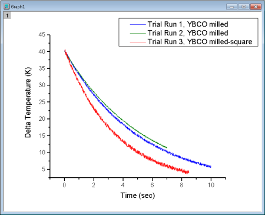 |
Spezielle Legendentypen
Wie erwähnt unterstützt Origin diese spezialisierten Legenden zur Verwendung mit spezifischen Diagrammtypen. Diese Legenden können benutzerdefiniert angepasst und ähnlich wie Diagrammlegenden, die zumeist von 2D-Diagrammtypen verwendet werden, aktualisiert werden.
| Legendentyp |
Zu erstellenden Menü |
Verwendet in Situationen, in denen ... |
| Legende für kategoriale Werte |
Grafik: Legende: Kategoriale Werte |
Mindestens eine Zeichnungseigenschaft (z.B. Farbe, Symbolform etc.) wird vom Datenindex gesteuert.
Siehe die Hilfeseite Legende für kategoriale Werte. |
| Punkt-für-Punkt-Legende |
Grafik: Legende: Punkt für Punkt |
Der Diagrammstil wird von dem Datenindex, einer Inkrementliste oder der Farbabbildung gesteuert.
Siehe die Hilfeseite Punkt-für-Punkt-Legende. |
| Legende für Komponenten von Boxdiagrammen |
Grafik: Legende: Boxdiagrammkomponenten |
Das Diagramm ist ein Boxdiagramm oder ein gruppiertes Boxdiagramm.
Siehe die Hilfeseite Legende für Boxdiagrammkomponenten. |
Tipps für schnelles Bearbeiten der Legende
Sie können viele Änderungen der Diagrammlegende auf der Minisymbolleiste der Legende vornehmen. Die Standardlegende für 2D-Diagramme hat zwei Minisymbolleisten:
- Die Symbolleiste Legende -- verfügbar, wenn Sie das Legendenobjekt auswählen -- hat allgemeine Bedienelemente für Schrift, Legendenrekonstruktion, Umkehrung der Reihenfolge etc. Klicken Sie auf das Legendenobjekt, um die blauen Auswahlelemente zu erzeugen.

- Sie gewinnen auch Zugriff auf komplexere Bedienelemente wie den Übersetzungsmodus der Diagrammlegende. Mit ihm können Sie die Metadaten in der Spaltenbeschriftungsspalte identifizieren, die Sie zum Erstellen der Diagrammlegende verwenden möchten.
- 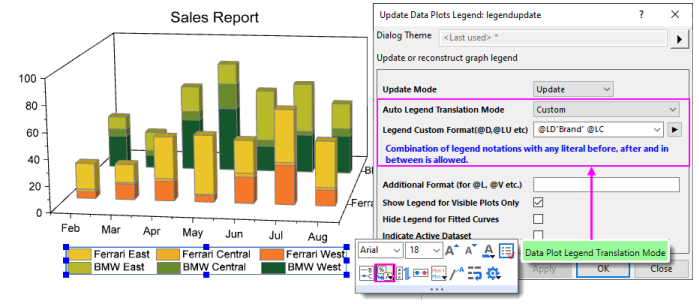
- Die Symbolleiste Legendensymbol wird verfügbar, wenn Sie auf ein Legendensymbol klicken. Verwenden Sie sie, um Höhe, Breite, Liniendicke etc. des Symbols oder Musterblocks zu ändern.
- 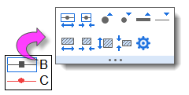
Zusätzlich zu der Minisymbolleiste für die Standardlegende gibt es Symbolleisten speziell für Farbskalen und Blasenskalen.
Um Ihre Legende oder Skala mit Hilfe einer Minisymbolleiste zu formatieren:
- 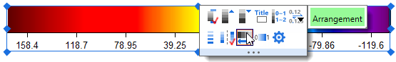
- Wählen Sie eine Legende oder eine Legendenkomponente (z. B. Legendensymbol) aus. Es wird eine Minisymbolleiste mit kontextspezifischen Schaltflächen gezeigt.
- Wenn die Symbolleiste zu schnell ausgeblendet ist, können Sie sie durch Drücken der Shift-Taste wiederherstellen.
| Um mehrere Legendenobjakte auf einer Seite mit einer Minisymbolleiste zu formatieren, drücken Sie die Strg-Taste und wählen Sie die Objekte. Lassen Sie die Strg-Taste los, um eine Minisymbolleiste für die Bearbeitung anzuzeigen. Alternativ gehen Sie außerdem bei aktivem Diagrammfenster zur Objektverwaltung und klicken Sie mit der rechten Maustaste auf ein Legendenobjekt, wählen Sie Alle mit gleichem Namen auswählen und verwenden Sie die hier angezeigte Minisymbolleiste. |
.Weitere Tipps zur Bearbeitung der Legende
- Abgesehen von den Schaltflächen der Minisymbolleiste können Sie auch mit der rechten Maustaste auf das Legendenobjekt klicken, Legende wählen und ein Kontextmenü mit einigen nützlichen Befehlen wie Textfarbe folgt Zeichnung, Umgekehrte Reihenfolge und Legende nur für sichtbare Zeichnungen zeigen öffnen. Die gleichen Menübefehlen sind über Grafik: Legende verfügbar.
- Sowohl Minisymbolleiste als auch Kontextmenü verfügen über eine/n Schaltfläche/Befehl Vertikal/Horizontal anordnen zum Ändern der Legendenansicht. Sie können sie auch interaktiv modifizieren, indem Sie das Legendenobjekt markieren und dann Strg drücken, während sie an einem Auswahlelement ziehen (z. B. horizontal ziehen, um eine Legende zu erstellen, die sich in Gänze auf einer Zeile befindet).
- 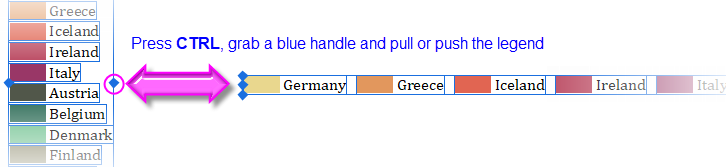
- Sie können den weißen Raum um die Legendeneinträge in 2D-Standardlegenden modizifizieren, indem Sie genau auf den Legendenrahmen klicken und an den Auswahlelementen ziehen.
- 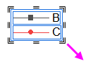
- Auch wenn die Metadaten, die in den Spaltenbeschriftungszeilen gespeichert sind, eine ideale Quelle für den Legendentext sind, können Sie den existierenden Legendentext einfach mit literalem Text überschreiben. Entweder klicken Sie doppelt auf den Legendentext, um den direkten Bearbeitungsmodus zu öffnen, oder, sollte sich das als zu mühsam herausstellen, Sie klicken mit der rechten Maustaste auf die Legende und wählen Eigenschaften (wobei Sie aufpassen, nicht die Notation "\l( )" zu überschreiben, die das Diagrammsymbol erstellt). Auch das Drücken der Strg-Taste und ein Doppelklick auf die Legende öffnen diesen Dialog.
- Wie oben erläutert, wird die Standardlegende automatisch durch Kombinieren der Arbeitsblattmetadaten mit benutzerdefinierbaren Diagrammstilen erzeugt. Es kommt jedoch vor, dass Ihre automatisch erzeugte Legende ein wenig bearbeitet werden muss:
- 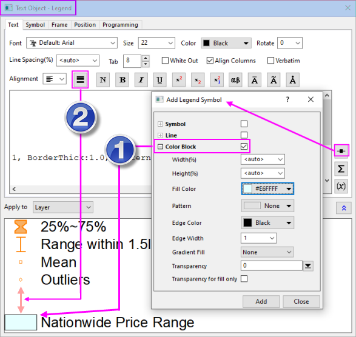
- Eine gängige Legendenanpassung besteht im manuellen Hinzufügen von Legendensymbolen und -text, die von jeder Datenzeichnung unabhängig sind (Informationen dazu finden Sie hier). Abgesehen von häufig verwendeten Symbolen können Sie jetzt einen unabhängigen Farbblock (1) hinzufügen:
- Klicken Sie mit der rechten Maustaste auf das Legendenobjekt und wählen Sie Eigenschaften, um den Dialog Textobjekt - Legende zu öffnen.
- Klicken Sie auf die Schaltfläche Legendensymbol hinzufügen 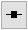.
- Aktivieren Sie Farbblock, passen Sie den Block benutzerdefiniert an und klicken Sie auf Hinzufügen.
- Fügen Sie manuell Text am Ende der Zeichenkette hinzu, die zum Erzeugen des Blocks verwendet wird, bevor Sie die Eigenschaften schließen.
- Eine weitere gefragte Anpassung besteht in dem Hinzufügen von etwas weißer Fläche zwischen Legendeneinträgen. Dies wird über die Schaltfläche Trennzeichen
 auf der Symbolleiste Textobjekt - Legende (2) gemacht.
auf der Symbolleiste Textobjekt - Legende (2) gemacht.- Platzieren Sie den Cursor im oberen Bedienfeld des Dialogs Textobjekt - Legende am Ende der Zeile vor der Stelle, an der Sie das Trennzeichen haben wollen. Klicken Sie dann auf die Schaltfläche Trennzeichen . (Hinweis: Die Dicke des Trennzeichens kann über das Bearbeiten des numerischen Anteils der eingefügten Syntax \sep:50 gesteuert werden.)
- Wenn Sie manuell Sonderzeichen zur Legende hinzufügen, gibt es dafür einen vereinfachten Dialog Abbildung Symbole. Die am meisten verwendeten Symbole sind auf Registerkarten angeordnet, um einfacher auf sie zugreifen zu können. Um den vollständigen Dialog Abbildung Symbole aufzurufen, klicken Sie auf die Schaltfläche Erweitert.
- 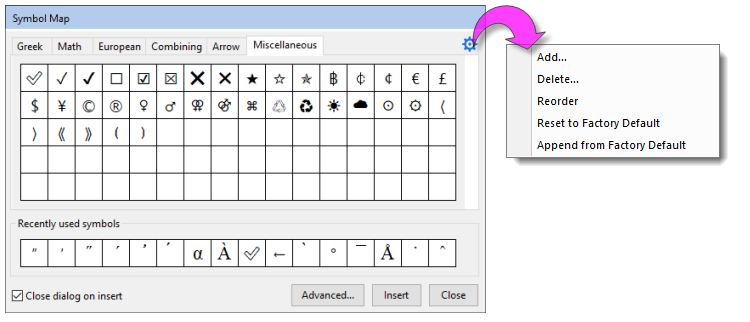
- Klicken Sie zum Öffnen des Dialogs Details Zeichnung doppelt auf ein Legendensymbol.
- Jegliche Änderungen, die Sie an der Legende vornehmen, können mit der Diagrammvorlage gespeichert werden (Datei: Template speichern unter). Wenn Sie nicht wollen, dass bei jedem Erstellen des Diagramms ein Legendenobjekt zu Ihrem Diagramm hinzugefügt wird, löschen Sie das Legendenobjekt und speichern Sie die Diagrammvorlage erneut.
Anmerkungen zu Ihrem Diagramm hinzufügen
Diagramme, Text & Zeichenobjekte hinzufügen Wenn wir davon sprechen, ein Diagramm mit "Anmerkungen" zu versehen, dann reden wir davon, Text oder Zeichenobjekte zum Diagramm hinzuzufügen. Im Allgemeinen helfen diese "Anmerkungen" dabei, das Diagramm auf eine bestimmte Weise zu verbessern -- einen Seitentitel hinzufügen, einen Pfeil hinzufügen, um die Aufmerksamkeit auf ein Diagrammelement zu ziehen, Datenpunkte beschriften, einen Datum-/Zeitstempel hinzufügen, um die Zeit der Diagrammerstellung zu dokumentieren, etc.
Ein Diagramm mit Anmerkungen zu versehen kann so einfach sein, wie ein statisches Textobjekt hinzuzufügen und dieses mit den Schaltflächen der Minisymbolleiste zu formatieren. Sie können auch ein komplexeres Objekt hinzufügen, das dynamisch mit einem Variablenwert oder mit LabTalk-Skript verknüpft ist, das ausgeführt wird, sobald ein vom Anwender spezifiziertes Ereignis eintritt.
Die folgende Tabelle listet einige allgemeine Aufgaben der Diagrammanmerkungen und verfügbare Hilfsmittel zum Erfüllen dieser Aufgaben auf.
| Aufgabe |
Methode |
| Datenpunkte und Zeichnungen beschriften |
- Wählen Sie Format: Zeichnung, klicken Sie dann auf die Registerkarte Beschriftung und aktivieren Sie Aktivieren (nicht verfügbar für alle Diagrammtypen).
- Wählen Sie eine Zeichnung und verwenden Sie die Minisymbolleiste Datenbeschriftungen zeigen
 , um die Beschriftungen einzuschalten. Einige Beschriftungsschaltflächen unterstützen womöglich Formatierungsoptionen für die Datenbeschriftungen (Hinweis ist ein nach unten weisender Pfeil wie auf der hier gezeigten Schaltfläche). , um die Beschriftungen einzuschalten. Einige Beschriftungsschaltflächen unterstützen womöglich Formatierungsoptionen für die Datenbeschriftungen (Hinweis ist ein nach unten weisender Pfeil wie auf der hier gezeigten Schaltfläche).
- Um einen einzelnen Datenpunkt zu beschriften, klicken Sie zweimal auf den Punkt (Hinweis: Kein Doppelklick, sondern ein einzelner Klick, dann Pause, dann einzelner Klick). Wenn der einzelne Punkt ausgewählt ist, klicken Sie auf die Schaltfläche Datenbeschriftungen zeigen auf der Minisymbolleiste.
- Für Formatoptionen, die nicht von den Minisymbolleisten unterstützt werden, verwenden Sie im Allgemeinen die Bedienelemente auf der Registerkarte Beschriftung des Dialogs Details Zeichnung. Beachten Sie, dass die Beschriftungsoptionen von dem Diagrammtyp abhängen.
|
| Textobjekte hinzufügen |
- Klicken Sie auf das Hilfsmittel Text einfügen
 und dann auf das Diagramm, um das Objekt zu positionieren. und dann auf das Diagramm, um das Objekt zu positionieren.
- Klicken Sie mit der rechten Maustaste auf das Diagramm und wählen Sie im Kontextmenü Text hinzufügen.
- Klicken Sie doppelt auf den Text, um die Bearbeitung des RichText zu öffnen. Oder klicken Sie auf das Objekt und verwenden Sie die Minisymbolleiste des Textobjekt, um die Einstellungen Schriftfarbe, Fett, Ausrichten, Textumbruch etc. zu ändern.
|
| Seitentitel hinzufügen |
- Um eine Seitentitel zum Diagrammfenster hinzuzufügen, bewegen Sie die Maus an die obere Kante der Seite (gleich unter die Titelleiste) und klicken Sie auf die Schaltfläche Seitentitel hinzufügen der Minisymbolleiste.
- 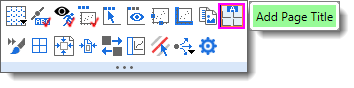
|
| Layertitel hinzufügen |
- Um den Layertitel im aktiven Layer hinzuzufügen/zu modifizieren, klicken Sie auf den Diagrammlayer. Klicken Sie dann auf die Schaltfläche Layertitel hinzufügen der Minisymbolleiste oder klicken Sie mit der rechten Maustaste auf das Diagramm und wählen Sie Layertitel hinzufügen/modifizieren im Kontextmenü.
- 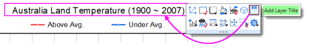
- Hier handelt es sich um einen neuen Typ von Textobjekt, der (a) im Layer horizontal mittig ausgerichtet und in dem (b) Textumbruch aktiviert ist. Wenn ein Titel hinzugefügt wurde, kann er mit der Schaltfläche auf der Minisymbolleiste ein- und ausgeblendet werden.
|
| Vertikale/Horizontale Linie hinzufügen |
- Wählen Sie bei aktivem 2D-Diagramm Einfügen: Gerade hinzufügen. Beachten Sie, dass dieses Hilfsmittel die Verwendung eines einfachen LabTalk-Ausdrucks im Feld Bei Wert zulässt (z. B. "mean(plotdata(1,Y))", das sich mit "Mittelwert des Y-Datensatzes der ersten Zeichnung" übersetzen lässt), um das Linienobjekt zu positionieren. Weitere Informationen finden Sie unter Bei Achsenwert.
|
| Einen Datenpunkt mit einer Anmerkung versehen Diagramme, einen Datenpunkt beschriften |
- Dies ist eine weitere Option zum Beschriften von einzelnen Datenpunkten. Klicken Sie auf das Hilfsmittel Anmerkung
 auf der Symbolleiste Hilfsmittel. Siehe Das Hilfsmittel Anmerkung. auf der Symbolleiste Hilfsmittel. Siehe Das Hilfsmittel Anmerkung.
|
| Zeichenobjekte hinzufügen |
Verwenden Sie die entsprechenden Schaltflächen auf der Symbolleiste Hilfsmittel. Origin unterstützt:- Pfeil, gekrümmter Pfeil
- Linie, Polylinie, Kurve, Freihand
- Rechteck, Kreis, Polygon, Bereich
|
| Gleichung, Word-Objekt, Excel-Objekt, weiteres OLE-Objekt einfügen ExcelDiagramme, Gleichung einfügen |
- Schaltflächengruppe Gleichung einfügen auf der Symbolleiste Hilfsmittel. Beachten Sie, dass Sie für Gleichungen eine kostenlose App vom Dateiaustausch von OriginLab herunterladen können, um LaTeX-Objekte zu Arbeitsblättern und Diagrammen hinzufügen.
|
| Arbeitsblatt einfügen, Diagramm einfügen |
- Klicken Sie auf Arbeitsblatt einfügen
 oder Diagramm einfügen oder Diagramm einfügen  auf der Symbolleiste Hilfsmittel (die zwei Funktionen teilen sich eine Schaltfläche). Ein Browserdialog wird geöffnet, über den Sie ein Arbeitsblatt oder ein Diagramm wählen können. Beide fügen ein Bildobjekt (name = WBook oder GPage) in das Diagramm ein. auf der Symbolleiste Hilfsmittel (die zwei Funktionen teilen sich eine Schaltfläche). Ein Browserdialog wird geöffnet, über den Sie ein Arbeitsblatt oder ein Diagramm wählen können. Beide fügen ein Bildobjekt (name = WBook oder GPage) in das Diagramm ein.
- Sie können den Stil von eingefügten Tabellen (Arbeitsblättern) bearbeiten, einschließlich der Farbgebung sich abwechselnder Zeilen und einer neuen Minisymbolleiste zum Modifizieren des Aussehen von Gitternetzen, Rahmen, Zellfarben, Schriften etc. Weitere Informationen finden Sie unter Arbeitsblätter in Diagramme (und Layouts) einfügen.
|
| Bild einfügen |
- Klicken Sie mit der rechten Maustaste auf das Diagramm und wählen Sie Bilder aus Dateien einfügen. Sie werden gefragt werden, ob Sie Ihr Bild als Hintergrund für den aktiven Diagrammlayer einfügen möchten. Die Antwort Ja importiert das Bild und platziert es hinter den Zeichnungen, Diagrammlegenden, Textobjekten etc.
|
| Tabelle einfügen |
- Klicken Sie auf die Schaltfläche Neue Verknüpfungstabelle 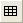 auf der Symbolleiste Objekt zu Diagramm hinzufügen und dann auf das Diagramm.
- Wählen Sie im Menü Einfügen: Tabelle.
- Um den Tabelleninhalt zu bearbeiten, klicken Sie doppelt auf das Tabellenobjekt.
- Um die Tabelle zu formatieren, wählen Sie sie aus und verwenden Sie die verfügbare Minisymbolleiste.
- 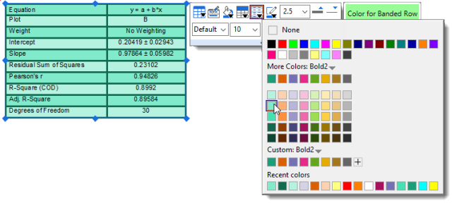
|
| Datums- & Zeitstempel einfügen |
- Schaltfläche Datum & Zeit
 auf der Symbolleiste Objekt zu Diagramm hinzufügen auf der Symbolleiste Objekt zu Diagramm hinzufügen
|
| Projektpfad einfügen |
- Schaltfläche Projektpfad
 auf der Symbolleiste Objekt zu Diagramm hinzufügen auf der Symbolleiste Objekt zu Diagramm hinzufügen
|
| Klammern mit Sternchen hinzufügen |
- Um statistische Gruppierungen zu kennzeichnen, klicken Sie auf die Schaltfläche Klammern mit Sternchen hinzufügen
 auf der Symbolleiste Objekt zu Diagramm hinzufügen. auf der Symbolleiste Objekt zu Diagramm hinzufügen.
- Um die Klammerform zu ändern, klicken Sie auf die Klammer und wählen Sie in der Auswahlliste des Klammertyps auf der Minisymbolleiste.
- 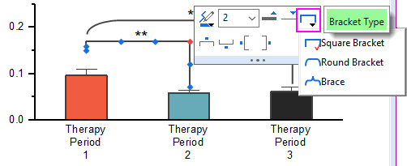
- Passen Sie die Größe und Position der Klammern durch Ziehen an den Bedienelementen auf dem Objekt manuell an.
- Um die Klammern zu formatieren, klicken Sie auf die Klammer und verwenden die Schaltflächen der Minisymbolleiste.
|
| XY-Skala hinzufügen |
Diese Option ist nützlich, wenn Sie eine nichtlineare XY-Skala verwenden.- Klicken Sie auf die Schaltfläche Skala einfügen 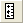 und dann auf ein Diagrammlayer.
- Wählen Sie Einfügen: XY-Skalierer.
|
Tipps zum Bearbeiten der Diagrammanmerkungen
| Seit Origin 2021 werden die Tasten Alt + Enter beim Erstellen von mehrzeiligen Textobjekten verwendet. Um wieder die Tasten Strg+Enter zu verwenden, um einen Zeilenumbruch einzufügen, setzen Sie @FCA=1.
|
- Wenn Sie beim Zeichnen mit den Hilfsmitteln Rechteck
 oder Kreis
oder Kreis  die Strg-Taste drücken, wird ein Quadrat oder ein Kreis gezeichnet (im Gegensatz zu einem Rechteck bzw. einer Ellipse).
die Strg-Taste drücken, wird ein Quadrat oder ein Kreis gezeichnet (im Gegensatz zu einem Rechteck bzw. einer Ellipse).
- Verwenden Sie die Schaltflächen der Minisymbolleiste für schnelle Bearbeitungen von ausgewählten Objekten. Umfangreichere Bearbeitungen führen Sie durch, indem Sie mit der rechten Maustaste auf ein Objekt klicken und Eigenschaften wählen, um Objekteigenschaften zu bearbeiten und Standardwerte festzulegen.
- Textobjekte, einschließlich Achsentitel und Diagrammlegenden, können Sie im direkten Bearbeitungsmodus bearbeiten. Klicken Sie doppelt auf ein zu bearbeitendes Textobjekt. Verwenden Sie die Schaltflächen der Symbolleiste Format, um hoch- und tiefgestellte sowie griechische Zeichen hinzuzufügen.
- Sie können den Textumbruch für Textobjekte, einschließlich Legendenobjekte, aktivieren. Öffnen Sie den Dialog Eigenschaften des Objekts, klicken Sie auf die Registerkarte Rahmen und aktivieren Sie Textumbruch, Höhe anpassen. Oder wählen Sie das Objekt aus und klicken Sie auf die Schaltfläche Textumbruch auf der Minisymbolleiste.
- NEU: Standardmäßig gibt es eine Grenze von 80 Zeichen (mit Leerzeichen) für das direkte Bearbeiten des umgebrochenen Texts. Klicken Sie unter diesem Schwellenwert doppelt auf das Objekt. Dadurch wird der direkte Bearbeitungsmodus geöffnet. Ist der Schwellenwert überschritten, wird durch den Doppelklick der Dialog Eigenschaften geöffnet. Sie können diesen Schwellenwert mittels der Systemvariable @TLIP anpassen.
- NEU: Wenn die langen Textobjekte nicht umgebrochen sind, können Sie die Systemvariable @TLIPN verwenden (Standard = 60), um auf Doppelklick den Zeichenschwellenwert zum Aufrufen des direkten Bearbeitungsmodus zu bestimmen oder den Dialog Eigenschaften zu öffnen.
- Beachten Sie, dass das manuelle Bearbeiten der Achsentitel und Legenden möglicherweise die beste "schnelle Lösung" sein kann. In den meisten Fällen sind Sie jedoch besser beraten, die Metadaten der Arbeitsblattspalten zu verwenden, um Achsentitel und Legendentext automatisch zu erstellen.
- Legen Sie KEINE Schriftgröße fest, während Sie sich im direkten Bearbeitungsmodus befinden, es sei denn, Sie müssen Schriftgrößen innerhalb eines einzelnen Textobjekts mischen. Der richtige Weg, Schriftgrößen zu ändern, besteht darin, einmal auf das Textobjekt zu klicken, so dass die grünen Auswahlelemente angezeigt werden. Wählen Sie dann die Schriftgröße auf der Symbolleiste Format. Wenn Sie die Einstellungen im direkten Bearbeitungsmodus vornehmen, zeigt Origin nicht die richtige Schriftgröße, wenn Sie mit der Maus über das Textobjekt fahren.
- Wenn Sie sich im direkten Bearbeitungsmodus befinden, können Sie mit der rechten Maustaste klicken und Abbildung Symbole wählen, um Sonderzeichen in Ihr Textobjekt einzufügen.
- Sie können Daten aus einer Arbeitsblattzelle in ein Textobjekt einfügen, indem Sie den Zelleninhalt kopieren und einfügen. Klicken Sie - im direkten Bearbeitungsmodus - mit der rechten Maustaste und wählen Sie Einfügen oder Link einfügen. Daten, die über Einfügen hinzugefügt wurden, sind statisch. Daten, die über Link einfügen hinzugefügt wurden, sind dynamisch, so dass das Textobjekt aktualisiert wird, wenn sich die Daten in den verknüpften Zellen ändern.
- Sie können im direkten Bearbeitungsmodus mit der rechten Maustaste klicken und Info Variable einfügen wählen, um Projektvariablen in das Textobjekt einzufügen. Da die eingefügten Informationen mit einem LabTalk-Variablenwert verknüpft sind, werden die eingefügten Daten aktualisiert, sobald sich der Variablenwert verändert.
- Sie können mit Hilfe von LabTalks Substitutionsnotation % und $ Variablenwerte in ein Textobjekt einfügen, indem Sie im Dialog Textobjekt - Text des Textobjekts auf der Registerkarte Programmierung die Option Verknüpfung zu (%,$), Substitutionsebene auf 1 setzen. Klicken Sie mit der rechten Maustaste auf das Textobjekt und wählen Sie Eigenschaften im Kontextmenü. Alternativ können Sie die Schaltfläche Verknüpfung zur Substitution auf der Minisymbolleiste verwendet, wodurch Ihnen das Öffnen des Dialogs Eigenschaften erspart wird.
- Sie können die Bedienelemente auf der Registerkarte Programmierung im Dialog Eigenschaften verwenden, um LabTalk-Skript mit einem Text- oder einem Zeichenobjekt zu verbinden (siehe zum Beispiel Textbeschriftungen mit Daten und Variablen verknüpfen). Geben Sie Ihr Skript in das Textfeld ein und legen Sie eine Bedingung für Kriterien für Skriptausführung zum Ausführen des Skripts fest. Verwenden Sie die Auswahlliste Anwenden auf, um den Umfang für das Skript festzulegen.
- Sie können einen Bereich (von Zellen) aus einer Arbeitsmappe kopieren und ihn in ein Diagramm in Form eines Tabellenobjekts einfügen. Der Tabelleninhalt wird (a) durch Doppelklick auf das Objekt bearbeitet und (b) kann mit Hilfe der Schaltflächen auf der Minisymbolleiste formatiert werden.
| Sie können jetzt Textformatierung (z. B. hoch-/tiefgestellte Zeichen) für nicht aufeinander folgende Zeichen über den Dialog Eigenschaften des Textobjekts hinzufügen:
- Klicken Sie mit der rechten Maustaste auf das Textobjekt und wählen Sie Eigenschaften.
- Drücken Sie auf der Registerkarte Text die Strg-Taste und markieren Sie im Textfeld mehrere Zeichen durch Ziehen mit der Maus.
- Klicken Sie auf die Schaltfläche der gewünschten Textformatierung und klicken Sie auf OK, um zu schließen.
|
Einfache Abbildung Symbole
Auf der einfachen Abbildung Symbole gibt es jetzt ein Menü "Einstellungen", das beim Verwalten der Symbole unterstützt.
- Um ein Symbol einzufügen, markieren Sie das Symbol und klicken Sie auf Einfügen.
- Hilfe für den Dialog Erweitert oder andere Dialogeinstellungen finden Sie in der Origin-Hilfe.
Über das Symbol des "Zahnrads" ...
- Hinzufügen: Geben Sie eine durch Leerzeichen getrennte Unicode-Sequenz mit 4 Zeichen ein. Symbole werden an die aktuelle Registerkarte angehängt.
- Löschen: Geben Sie eine durch Leerzeichen getrennte Unicode-Sequenz mit 4 Zeichen ein. Die Symbole werden von der aktuellen Registerkarte entfernt. Oder klicken Sie auf Auswählen, um zu entfernende Symbole auszuwählen.
- Neu ordnen: Ziehen Sie zum Neuordnen mit der Maus und klicken Sie auf Fertig, um die Änderungen anzuwenden.
- Auf Werkseinstellung zurücksetzen: Die aktuelle Registerkarte wird auf den Standardsatz der Symbole zurückgesetzt.
- Werkseinstellung wiederherstellen: Zuvor gelöschte Standardsymbole werden auf der aktuellen Registerkarte wiederhergestellt (Anwendersymbole sind nicht betroffen).
Weitere Informationen finden Sie auf der Seite Unicode- und ANSI-Zeichen in Textbeschriftungen hinzufügen der Origin-Hilfe.
Gruppieren, Ausrichten und Anordnen mit der Symbolleiste Objekte bearbeiten
Sie können Textbeschriftungen und Zeichenobjekte gruppieren, so dass sie als Einheit verschoben oder in der Größe verändert werden:
- Um Objekte auszuwählen, drücken Sie Shift und klicken Sie oder ziehen Sie ein Feld mit dem Hilfsmittel Zeiger
 auf.
auf.
- Um ausgewählte Objekte zu gruppieren, klicken Sie auf die Schaltfläche Gruppieren
 auf der Symbolleiste Objekt bearbeiten.
auf der Symbolleiste Objekt bearbeiten.
- Um die Gruppierung von Objekten aufzuheben, klicken Sie auf die Schaltfläche Gruppierung aufheben
 auf der Symbolleiste Objekt bearbeiten.
auf der Symbolleiste Objekt bearbeiten.
Sie können mehrere Textbeschriftungen und/oder gezeichnete Objekte mit Hilfe der Hilfsmittel auf der gleichen Symbolleiste Objekt bearbeiten ausrichten:
- Wählen Sie die auszurichtenden Objekte aus, indem Sie während der Auswahl die Shift-Taste gedrückt halten (oder ziehen Sie ein Auswahlfeld mit dem Hilfsmittel Zeiger auf) und klicken Sie auf eine der Ausrichtungsschaltflächen auf der Symbolleiste. Beachten Sie, dass Objekte im Bezug zu dem als erstes ausgewählten Objekt ausgerichtet werden.
Sie können die sich überschneidenden Objekte in den Vordergrund oder in den Hintergrund schieben:
- Wählen Sie die Objekte aus, die Sie in den Vorder- oder Hintergrund schieben möchten.
- Klicken Sie auf die Schaltfläche Vordergrund
 oder Hintergrund
oder Hintergrund  auf der Symbolleiste Objekt bearbeiten.
auf der Symbolleiste Objekt bearbeiten.
| Sie können auch die Symbolleiste Objekt bearbeiten verwenden, um Diagrammlayer zu bearbeiten. Verwenden Sie die Schaltflächen, um mehrere Diagrammlayer auszurichten und eine einheitliche Größe für mehrere Diagrammlayer festzulegen oder um die Layerordnung zu vertauschen. |
Seiten- oder Layergitternetze zum Positionieren von Objekten verwenden
Um Objekte manuell zu platzieren -- Diagrammlayer, Textobjekte, Legenden etc. --, können Sie ein/e nicht druckbare/s, nicht exportierbare/s Seite oder Gitternetz aktivieren:
- Wählen Sie bei aktivem Diagramm Ansicht: Zeigen: Seitengitternetz/Layergitternetz (es wird nur eines gleichzeitig angezeigt).
- Alternativ können Sie Gitternetze einblenden, indem Sie nahe am Seitenrand klicken und dann auf die Schaltfläche Gitternetze zeigen in der Minisymbolleiste. Hier finden Sie außerdem Schaltflächen zum Vergrößern bzw. Verkleinern der Gitternetzgröße nach Inkrementen.
Gitternetz steuern
Gitternetzanzeige und verwandte Gitternetzeinstellungen sind bei Klicken auf die Schaltfläche Gitternetze zeigen verfügbar.
- Klicken Sie auf Gitternetze zeigen und dann auf Einstellungen des Seitengitternetzes.

Objekte anhängen und in Diagrammen skalieren
Diagramme, Objekte skalieren
Es gibt zwei Einstellungen, von denen Sie wissen sollten, insbesondere wenn Sie in der Folge Achsenskalierungen modifizieren oder die Größe des Diagrammlayers nach Hinzufügen der Anmerkungen ändern: Eine der Methoden ist die Funktion des Objekts Anhängen an, die andere ist das Layerverhalten Elemente skalieren.
Objekte anhängen
Wenn Sie in ein Origin-Diagrammfenster einen Text oder ein Zeichenobjekt einfügen, wird das Objekt Teil des aktiven Diagrammlayers. Dies ist wichtig, weil Sie, wenn Sie die Größe eines Diagrammlayers verändern bzw. den Layer löschen, die Größe des hinzugefügten Objekts verändern oder das Objekt löschen können.
Außer, dass sie Teil des Diagrammlayers sind, der während der Objekterstellung aktiv war, beachten Sie auch, dass Objekte auf drei verschiedene Arten am Diagramm angehängt werden können, abhängig vom Typ des Objekts und der Stelle, an der es auf der Seite erstellt wurde.
Zur Ansicht der Einstellung "Anhängen an" für jedes Objekt:
- Klicken Sie mit der rechten Maustaste auf ein Text- oder Zeichenobjekt und wählen Sie Eigenschaften.
- Klicken Sie auf die Registerkarte Programmierung und beachten Sie die Objekteinstellung Anhängen an.
Obwohl Objekte ein Teil des Layers sind, der zum Zeitpunkt ihrer Erstellung aktiv ist, können Sie das Objektverhalten steuern, indem Sie die Verbindungsmethode des Objekts ändern. Ein Objekt mit einer von drei verschiedenen Methoden angehängt:
- Seite Wenn Objekte mit der Seite verbunden werden, werden sie durch Verschiebung oder Größenveränderung des Layers nicht beeinflusst. Auch eine Änderung der Achsenskalierungen beeinträchtigt sie nicht. Sie sind jedoch noch immer mit einem besonderen Diagrammlayer verbunden und werden verborgen oder gelöscht, wenn der Layer verborgen oder gelöscht wird.
- Layerrahmen Objekte, die am Layerrahmen angehängt sind, werden mit Bezug auf den Layerrahmen verschoben und in der Größe verändert. Sie sind jedoch nicht an Achsenskalierungen gebunden und werden nicht von Änderungen der Achsenskalierungswerte des Layers beeinträchtigt. Objekte werden verborgen oder gelöscht, wenn der verbundene Layer verborgen oder gelöscht wird.
- Layer und Skalen. Objekte werden mit einem bestimmten Bereich der Achsenskalierungswerte verknüpft. Wenn Sie die Größe des Layers verändern, wird die Objektgröße entsprechend verändert. Wenn Sie die Achsen neu skalieren, verschiebt sich das Objekt im Verhältnis zur sichtbaren Skalierung und erscheint nicht in der Ansicht, wenn der verbundene Achsenskalierungsbereich nicht angezeigt wird. Objekte werden verborgen oder gelöscht, wenn der verbundene Layer verborgen oder gelöscht wird.
Um kurz darzustellen, warum das Anhängen von Objekten so wichtig ist, sehen wir uns das folgende Diagramm an. Nachdem das Diagramm erstellt wurde, wurden Pfeile und Textobjekte, die auf ihre jeweiligen Zeichnungen weisen, zum Diagramm hinzugefügt. Sowohl Pfeile als auch Textobjekte werden am Layerrahmen des Diagramm angehängt.
Überlegen Sie jetzt, was mit diesen Objekten geschieht, wenn wir die X-Achsenskalierung des Diagramms modifizieren (denken Sie daran, dass am Layerrahmen befestigte Objekte "von Änderungen an den Achsenskalierungswerten des Layers nicht beeinflusst werden"). Beachten Sie, dass durch Ändern des Anzeigebereichs der Achsenskalierung die Datenzeichnungen verschoben, die Textobjekte und Pfeils aber nicht mit verschoben wurden.
Die Lösung hierfür ist, die Methode zum Anhängen an von Text und Zeichenobjekt in Layer und Skalierungen zu ändern, weil: "wenn Sie die Achsen neu skalieren, verschiebt sich das Objekt in Relation zur sichtbaren Skalierung". Manchmal möchten wir ein Objekt, das sich mit den Skalierungsänderungen bewegt, ein anderes Mal möchten wir das nicht. Sie können beide Verhalten erzwingen, wenn Sie die Einstellung Anhängen an beachten.
Objektskalierung
Die Objektskalierung wird oft zum Thema, wenn der Diagrammlayer manuell in der Größe verändert wird oder wenn separate Diagramme zu einem Diagramm mit mehreren Feldern zusammengefügt werden (Grafik: Grafikfenster zusammenfügen). Standardmäßig werden hinzugefügte Objekte auf Layer mit Rahmen skalieren gesetzt -- das heißt, wenn der Diagrammlayer in der Größe verändert wird, werden zugehörige Objekte wie Textobjekte, Achsenlinien und -hilfsstriche sowie Achsentitel -- proportional skaliert. In dem Fall, in dem Sie vier Diagramme mit einzelnen Layern in einem einzigen Diagramm mit vier Layern und mehreren Feldern zusammenfügen, werden diese Objekte mit der verringerten Größe des Layerrahmens herunterskaliert.
Dies ist jedoch ein anderes Standardverhalten, das Sie womöglich ändern möchten (z. B. haben Sie Ihr Schriftgröße auf 10 Pkt. gesetzt und möchten diese Größe beibehalten). Dies können Sie über das Bedienelement Elemente skalieren auf der Registerkarte Größe (Layerebene) im Dialog Details Zeichnung tun. Wenn unser Ziel darin besteht, die aktuelle Objektgröße beizubehalten, wenn Diagramme zusammengefügt werden, dann können wir beispielsweise den Dialog Details Zeichnung öffnen und auf Layerebene (Format: Layer...) auf die Registerkarte Größe klicken. Wählen Sie dann die Option Fester Faktor und legen Sie den Skalierungsfaktor 1 fest.
| Wenn Sie die Größe des Diagrammlayers verändert haben, entweder indem Sie mehrere Diagramme zu einem einzelnen Diagramm zusammengefügt haben oder indem Sie die Größe des Layers manuell geändert haben, dann werden Sie sehen, dass die Schriftgrößen nicht in ihrer "richtigen" Größe angezeigt werden (d. h., wenn Sie ein Textobjekt auswählen, zeigt die Liste Schriftgröße auf der Symbolleiste Format die ursprüngliche Schriftgröße). Wenn Sie darüber hinaus ein Textobjekt auswählen, gibt die Statusleiste zwei Schriftgrößenzahlen an -- "Größe" und "tatsächlich". Sie können die Schriftgröße zurücksetzen, so dass die tatsächliche Größe, nicht die skalierte Größe gezeigt wird, indem Sie Grafik: Skalierungsfaktoren festlegen wählen. Weitere Informationen finden Sie unter FAQ-441 Wie kann ich Diagramme mit exakter, vom Herausgeber festgelegter Größe und Auflösung exportieren? |
Bilder in Diagramme einfügen
Es gibt zwei allgemeine Ansätze zum Hinzufügen von Bilder zu Diagrammfenstern:
Frei bewegliche oder Hintergrundbilder
- Bilder können aus Dateien oder (b) aus Bildfenstern in Diagramme eingefügt werden.
- Bilder können als frei bewegliche Bilder oder als ein Layerhintergrund eingefügt werden.
- Klicken Sie doppelt auf ein Diagrammbild, um das Bild in einem Bildfenster zu öffnen.
- Wenn es im Bildfenster geöffnet ist, definieren Sie ein ROI-Feld (Region-of-Interest) und beschneiden Sie das Bild (Diagrammbild auf ROI zuschneiden) oder schneiden es aus (Bild wird im Bildfenster und Diagramm ausgeschnitten).
- Verwenden Sie das Bildfenster, um die Skalierung (Bild) oder die Koordinaten (Bild) des eingefügten Bilds zu setzen.
- Bilder können mit dem Projekt oder gespeichert oder mit einer externen Datei verknüpft werden (Verknüpfte Datei), um die Projektgröße zu steuern.
| Vor Origin 2022b mussten Bilder, die mit einer externen Datei verbunden waren, manuell beim Öffnen eines Projekts neu importiert werden. Jetzt werden verknüpfte Bilder automatisch neu importiert, einschließlich modifizierte Quellenbilder. Deaktivieren oder modifizieren Sie den automatischen Import mit den Systemvariablen @LFAU und @LFC. |
Bild aus Datei einfügen
Sie können ein Bild in eine Diagrammseite einfügen. Dazu verwenden Sie die Option, es als Hintergrundbild einzufügen, das mit Layer und Skalen verknüpft ist.
- Wählen Sie bei aktivem Diagrammlayer Einfügen: Bild aus Datei. Das Bild wird als ein frei bewegliches Bild eingefügt.
- Um das Bild in ein Hintergrundbild zu konvertieren, klicken Sie doppelt auf das Bild in einem Bildfenster.
- Klicken Sie mit der rechten Maustaste auf auf das Bild im Bildfenster und wählen Sie Als Layerhintergrund setzen.
- Klicken Sie auf die Schaltfläche Schließen
 im Bildfenster.
im Bildfenster.
Bild aus Bildfenster einfügen
Sie können Bilder auch von einem Bildfenster aus in Diagramme einfügen:
- Wählen Sie bei aktivem Diagrammlayer Einfügen: Bild aus Bildfenster. Der Dialog Aus Bildfenster einfügen wird geöffnet.
- Setzen Sie die Auswahlliste Bildfenster auf das gewünschte Bild.
- Optional wählen Sie das Einfügen des Bildes als Layerhintergrund und das Neuskalieren des Layer mit Hilfe der Bildkoordinaten (nur Layerhintergrund).
Bilder mit dem Bildfenster bearbeiten
Minisymbolleisten
Das Klicken auf ein Bildfenster zeigt eine Minisymbolleiste mit Schaltflächen für die einfache Bildbearbeitung an (Spiegeln, Drehen, in Graustufen konvertieren etc.).
Grafische Datenauswahl (ROI)
Das Platzieren eines ROI-Objekts auf dem Bild im Bildfenster ermöglicht Ihnen, bestimmte Bildbearbeitungen durchzuführen.
Fügen Sie ein ROI-Feld zum Bild hinzu, indem Sie eine der folgenden Dinge tun
- Klicken Sie auf die Schaltfläche ROI hinzufügen
 auf der Minisymbolleiste.
auf der Minisymbolleiste.
- Klicken Sie mit der rechten Maustaste auf das Bild und wählen Sie ROI hinzufügen.
- Klicken Sie auf die Schaltfläche Rechteck einfügen auf der Symbolleiste Hilfsmittel.

Sobald es hinzugefügt wurde, kann das ROI-Feld in der Größe verändert werden (durch Ziehen an den Auswahlelementen) oder verschoben. Außerdem können viele weitere Operationen im ROI-Feld durchgeführt werden, darunter:
- Zuschneiden des Diagrammbilds auf das ROI, Ausschneiden des Bild gemäß dem ROI oder Kopieren des ROI als Bild in Diagramm.
- Positionen kopieren/Positionen einfügen zum Kopieren der ROI-Abmessungen in ein zweites ROI in einem anderen Bildfenster.
- ROI exportieren oder ROI importieren, um die zuvor gespeicherten ROI-Dimensionen zu speichern oder anzuwenden.
Weitere Informationen zum Bildfenster finden Sie in der Origin-Hilfe.
Bilder in ein Textobjekt einfügen
Bilder können auch als Teil (oder in ihrer Gesamtheit) eines Textobjekts eingefügt werden. Bilder können aus Quellen stammen wie:
- Lokale Bilddatei oder URL eines Web-Bilds
- Arbeitsblattzelle

Lokales Bild oder Web-URL
Wenn Sie ein Bild aus Datei oder Bild aus Web mit Hilfe der folgenden Methoden einfügen, wird das Bild verlinkt und nicht in der Origin-Projektdatei gespeichert. Dies hilft bei der Steuerung der Projektdateigröße.
- Klicken Sie auf der Symbolleiste Hilfsmittel auf das Hilfsmittel Text und klicken Sie einmal auf das Diagramm, um in den direkten Bearbeitungsmodus zu gelangen.
- Geben Sie Text nach Bedarf ein und, wenn Sie bereit sind, das Bild einzufügen, klicken Sie mit der rechten Maustaste und wählen Sie Einfügen: Bild aus Datei oder Bild aus Web:
- Beim Einfügen eines Bildes aus einer Datei navigieren Sie zu Ihrer lokalen Bilddatei und klicken Sie auf Öffnen.
- Beim Einfügen eines Bilds aus dem Web benötigen Sie eine URL (Hinweis: Navigieren Sie zu Ihrem Web-Bild, klicken Sie dann mit der rechten Maustaste und kopieren Sie die Adresse (Bildadresse kopieren, Bildlink kopieren etc abhängig vom Browser).
Um die zum Einfügen eines Bildes verwendete Syntax zu untersuchen (oder zu modifizieren), können Sie das eingefügte Objekt auswählen und Eigenschaften wählen. Im Dialog Textobjekt sollten Sie etwas Ähnliches wie in diesen Beispielen sehen:
Beispiele:
\img(file://"C:/Program Files/OriginLab/Origin2022b/Samples/Image Processing and Analysis/white camellia.jpg",w=200) \img(https://www.originlab.com/images/header_logo.png, w=200)
... wobei die Option "w=" die Standardbreite in Pixel des eingefügten Bildes ist. Die Breite ist durch den Benutzer änderbar, indem der Wert "w=" in Eigenschaften geändert wird oder -- wenn keine Breite festgelegt ist -- indem einfach an den Auswahlelementen des Objekts gezogen wird.
Arbeitsblattzelle
Sie können auch ein Bild aus einer Arbeitsblattzelle in ein Textobjekt einfügen, aber Sie brauchen dazu eine spezielle Syntax. Die Syntax ist nicht kompliziert und kombiniert eine \cell( )-Escape-Sequenz mit einer Zellenreferenz -- entweder eine Bereichsreferenz (z. B. [Book1]Sheet1!col(C)[1]) oder eine Referenz für einen Bereich mit Name.
- Klicken Sie auf der Symbolleiste Hilfsmittel auf das Hilfsmittel Text einfügen und dann einmal auf das Diagramm, um den "direkten" Bearbeitungsmodus zu öffnen. Oder klicken Sie mit der rechten Maustaste und wählen Sie Text hinzufügen im Kontextmenü.
- Geben Sie Ihre Zeichenkette in das Textobjekt mit Hilfe der untenstehenden Beispiele als eine Art Anleitung ein:
- Wenn Sie eine Zeichenkette kopieren und einfügen (z. B.
\cell([Book1]Sheet1!B[1])), klicken Sie außerhalb des Textobjekts, um den Bearbeitungsmodus zu verlassen. Ihr Zellenbild sollte im Textobjekt angezeigt werden.
- Wenn Sie im "direkten" Bearbeitungsmodus direkt in das Textobjekt tippen, geben Sie Ihre Syntax (z. B.
\cell([Book1]Sheet1!B[1])) ein. Wenn Sie fertig sind, klicken Sie mit der rechten Maustaste auf das Objekt, wählen Sie Eigenschaften und entfernen Sie auf der Registerkarte Text eines der führenden "\"-Zeichen aus Ihrer Zellenreferenz (Origin "schützt" in Textobjekte eingegebene "\"-Zeichen automatisch, daher m üssen Sie ein "\" entfernen. Siehe Escape-Sequenzen).
- Wenn Sie Ihre Eingabe direkt im Textobjekt (Dialog Eigenschaften) vornehmen, geben Sie Ihre Syntax (z. B.
\cell([Book1]Sheet1!B[1])) direkt ein, um das Zellenbild anzuzeigen.
Beispiele:
\cell([Book1]1!col(C)[2]) // Book1, Sheet1, col C, row2, size = current font height \cell(alpha,200) // named range "alpha", width=200 logical pixels \cell(alpha,h=300) // named range "alpha", height=300 logical pixels
Mit Kartendaten arbeiten
Sie können die geopolitischen Grenzen in Diagrammen oder Bilddiagrammen von NetCDF-Daten über das Menü Einfügen überlagern.
- Einfügen: Weltkarte wendet Grenzen innerhalb der aktuellen Längen- und Breitengradbereiche der Diagramme an.
- Abhängig von den Längen- und Breitengradbereichen des Diagramms können andere Optionen zur Verfügung stehen (z. B. Karte der kontinentalen USA, von China etc.).
Shapefiles importieren
Sie können auch lokal gespeicherte Shapefiles mit Origins Shapefile-Konnektor importieren:
- Wählen Sie bei aktivem Arbeitsblatt Daten: Mit Datei verbinden: Shapefile.
Kartenrelevante Apps
Es gibt mindestens zwei Add-on-Apps zum Einfügen von geografischen Daten:
- Mit OriginLabs kostenloser App Google Map Import können Sie eine Google Map als Hintergrund auf der Diagrammseite mit festgelegten Koordinaten platzieren.
- Maps Online ist eine weitere kostenfreie App von OriginLab, mit der Sie eine Verbindung zu mehreren Kartendatenbanken herstellen können.
Sie können diese Apps suchen und installieren, indem Sie auf F10 drücken und die Karten durchsuchen. Informationen zur Installation von Apps finden Sie unter Wo suche ich nach Apps?
Diagramme und Layer anordnen
Diagramme, zusammenfügenDiagramme, in Layer extrahieren Diagramme, in Diagramme extrahieren
| Aufgabe |
Methode |
| Mehrere Diagrammfenster zu einem einzelnen Diagrammfenster zusammenfügen |
- Menü Grafik: Grafikfenster zusammenfügen.
oder
- Schaltfläche Zusammenfassen
 auf der Symbolleiste Diagramm auf der Symbolleiste Diagramm
|
| Datenzeichnungen von einem Layer in mehrere Layer extrahieren |
- Schaltfläche In Layer extrahieren
 auf der Symbolleiste Diagramm auf der Symbolleiste Diagramm
Hinweis: Um Ihr ursprüngliches Diagramm zu bewahren, klicken Sie auf die Schaltfläche Duplizieren  , bevor Sie in die Layer extrahieren. , bevor Sie in die Layer extrahieren.
|
| Mehrere Layer aus einem Diagramm in mehrere Diagrammfenster extrahieren |
- Menü Grafik: In Grafiken extrahieren
oder
- Klicken Sie auf die Schaltfläche In Grafiken extrahieren
 auf der Symbolleiste Diagramm. auf der Symbolleiste Diagramm.
Jeder Layer wird in ein einzelnes Diagrammfenster weitergegeben, selbst wenn ein Layer mit einem anderen verbunden ist.
Standardmäßig sind im Dialog layextract die Extrahierten Layer auf 1:0 gesetzt, wodurch festgelegt wird, dass alle Layer extrahiert werden. Um nur bestimmte Layern zu extrahieren, deaktivieren Sie Auto und verwenden Sie die Notation der X-Funktion layextract für Komma/Doppelpunkt, um zu steuern, welche Layer extrahiert werden. Die Notation 1:0 bedeutet, dass mit Layer 1 begonnen wird und alle Layer in Diagramme extrahiert werden (0 steht für alle). Die Angabe von 1,3:4 sagt Origin beispielsweise, dass nur der erste, dritte und vierte Layer extrahiert werden. Beachten Sie, dass Sie Quelldiagramme beibehalten aktivieren können, um das ursprüngliche Diagramm zu bewahren.
|
| Layer hinzufügen, anordnen, in der Größe verändern, positionieren, austauschen, ausrichten oder verknüpfen |
- Menü Grafik: Layerverwaltung
- Positionieren Sie ausgewählte Layer mit Hilfe der Symbolleistenschaltflächen Objekt bearbeiten. Halten Sie die Taste SHIFT gedrückt und klicken Sie, um mehrere Layer auszuwählen und links, rechts, oben, unten etc. auszurichten.
| Sie können das Bedienelement Austauschen der Layerverwaltung (Grafik: Layerverwaltung,Größe/Position) verwenden, um Layerpositionen physisch auszutauschen, ohne die Layernummern neu zu ordnen. Bevor Sie das tun, setzen Sie die Einheiten von jedem verknüpften Layer auf % der Seite (Registerkarte Größe und Performance im Dialog Details Zeichnung). |
|
| Einfache Anordnung der Layer |
- Menü Grafik: Layer anordnen
- Layeranordnung Zeile x Spalte mit Steuerung der Seitengröße und Abständen zwischen den Layern
|
| Diagrammlayer verknüpfen Diagramme, Achsenskalierungen verknüpfen |
- Registerkarte Achsen verbinden auf Layerebene des Dialogs Details Zeichnung
- Registerkarte Verknüpfung des Dialogs Layerverwaltung
Wenn Layer verknüpft werden, muss der Unterlayer eine höhere Layernummer haben als der Hauptlayer.
Verknüpfte Layer können zusammen verschoben und in der Größe verändert werden.
Sie können die Achsenskalierungswerte der Layer mit der Option Gerade (1 zu 1) verknüpfen oder Sie können eine benutzerdefinierte mathematische Beziehung festlegen.
- Bei jedem Säulen-/Balken-/Boxdiagramm kann jeder Satz der verknüpften Layer die Einstellung Abstand zwischen Balken (%) auf der Registerkarte Abstände des verknüpften Layers teilen. (Erforderlich: Auf Seitenebene ist auf der Registerkarte Layer die Option Säulen-/Balken-/Boxenabstand über Layer aktiviert).

|
| Layer neu ordnen Diagramme, Layer neu ordnen |
Es gibt mehrere Möglichkeiten, Diagrammlayer neu zu ordnen (Neuzuweisung der Layernummer für jeden Layer). Sie können mehr über die Neuzuweisung von Layernummern in dem Mini-Tutorial unter dieser Tabelle erfahren.
- Methode 1: Öffnen Sie den Dialog Layer-Management, klicken Sie auf den Zeilenkopf (im Bild unten zu sehen) und ziehen Sie ihn nach oben oder nach unten, um die Layerordnung zu ändern.
Weitere Informationen finden Sie im Abschnitt zum Hilfsmittel Layerverwaltung.
- Methode 2: Geben Sie das folgende LabTalk-Skript im Befehlsfenster (Fenster: Befehlsfenster) ein und drücken Sie dann zum Ausführen Enter.
page.reorder(n,m)
Der Befehl verwandelt den n-ten Layer in den m-ten Layer.
- Methode 3: Verwenden Sie die Schaltflächen Vorn und Hinten auf der Symbolleiste Objekt bearbeiten (diese Schaltflächen funktionieren auf dem aktiven Layer, wie durch das Symbol des Diagrammlayers
 angegeben). Alternativ können Sie mit der rechten Maustaste auf das Symbol des Diagrammlayers klicken und die Layerordnung mit Hilfe von Kontextmenübefehlen ändern (z. B. In den Vordergrund verschieben). angegeben). Alternativ können Sie mit der rechten Maustaste auf das Symbol des Diagrammlayers klicken und die Layerordnung mit Hilfe von Kontextmenübefehlen ändern (z. B. In den Vordergrund verschieben).
| Wenn zwei Layer miteinander durch eine gemeinsame X-Achse (z. B. Diagramm mit doppeltem Y) verknüpft sind, können Sie die Zeichenreihenfolge der Layer wechseln, indem Sie mit der rechten Maustaste auf den "vorderen" Layer in der Objektverwaltung klicken und In den Hintergrund verschieben wählen. Die Layerverknüpfung wird dadurch nicht aufgehoben. |
Hinweis: Das Neuordnen der Layer kann durch Layerverknüpfung erzeugte Beziehungen beeinträchtigen.
| Ein Hinweis zu eingesetzten Diagrammen: In bestimmten Situationen (siehe Tutorial unten) wird die Reihenfolge, in der die Layer auf dem Bildschirm gezeichnet werden, ein Problem. In diesem Bild haben wir ein eingesetztes Diagramm mit Hilfe der Schaltfläche Eingefügtes Diagramm mit Daten hinzufügen (Symbolleiste Diagramm) hinzugefügt. Das Problem ist, dass die Datenzeichnung des Hauptlayers (rote Symbole) durch das eingesetzte Layer (kleine schwarze Symbole) durchscheint. Um dies zu beheben, tun wir zwei Dinge:
- Setzen Sie die Farbe des Hintergrunds des eingesetzten Layers auf Weiß -- Standardeinstellung ist Keine (Format: Layer, dann Registerkarte Hintergrund).
- Setzen Sie die Zeichenreihenfolge des Layers auf Layer nacheinander zeichnen (Format: Seite, dann Registerkarte Layer).
Standardmäßig wird ein eingesetztes Layer "oberhalb" des Hauptlayers hinzugefügt. Falls es jedoch notwendig ist, können Sie auch auf das eingesetzte Layer klicken, um es auszuwählen, dann mit der rechten Maustaste klicken und In den Vordergrund verschieben wählen. |
|
| XY-Achsen austauschen |
- Menübefehl Grafik: X-Y-Achsen vertauschen
- Schaltfläche Achsen austauschen
 auf der Symbolleiste Diagramm auf der Symbolleiste Diagramm
|
| Eine Zeichnung in einen anderen Layer verschieben |
- Methode 1: Öffnen Sie den Dialog Diagrammeinstellungen (durch Auswahl von Grafik: Setup Diagramm), erweitern Sie das untere Bedienfeld, wählen Sie eine Zeichnung und ziehen Sie von einem Layer zu einem anderen Layer.
- Methode 2: Führen Sie
laymplot -d; aus (öffnen Sie z. B. das Skriptfenster, geben den Sie den Befehl ein und drücken Sie Enter), um den Dialog Zeichnung verschieben zu öffnen. Hier können Sie die zu verschiebenden Zeichnungen und einen Ziellayer bestimmen.
- Methode 3: Kopieren Sie eine Zeichnung (Strg+C oder Bereich kopieren im Kontextmenü) und fügen Sie sie (Strg+V oder Einfügen im Kontextmenü) zwischen verschiedenen Layern oder Grafiken ein.
Hinweis: Die eingefügte Zeichnung ist nicht mit den Quelldaten der kopierten Zeichnung verbunden, sondern existiert als unabhängiger Datensatz.
|
|
In einer Grafik mit mehreren Layern wird die Zeichenreihenfolge von der Layerordnung bestimmt. Der erste Layer wird gezeichnet, danach der zweite Layer darüber und so weiter. Der Layer mit der höheren Nummer wird auf dem Layer mit den niedrigeren Nummer gezeichnet. Dies ist wichtig, wenn Zeichnungen in einem Layer Zeichnungen in einem anderen Layer überlagern. Wenn notwendig, können Sie die Layerordnung ändern, um die Zeichenreihenfolge der Zeichnungen zu ändern. Dieses kleine Tutorial zeigt Ihnen, wie der Vorgang der Layerneuzuweisung vonstatten geht. Verwenden Sie das Vorschaufenster, um zu sehen, wie die Neuzuweisung der Layernummern Ihr Diagramm beeinflussen.
- Klicken Sie auf Hilfe: Origin-Navigator oder drücken Sie F11.
- Klicken Sie auf die Registerkarte Diagrammbeispiel, setzen Sie die Auswahlliste Beispiel in auf Flächendiagramme und klicken Sie doppelt auf dieses Diagramm:
-
- Aktivieren Sie das Diagramm Area Plot With Horizontal Color Gradient und klicken Sie dann auf die Schaltfläche In Layer extrahieren auf der Symbolleiste Diagramm. Setzen Sie sowohl die Anzahl der Zeilen als auch der Spalten auf 1, klicken Sie auf OK und dann für den Seitenabstand erneut auf OK. Der grüne Layer befindet sich in dem Bild auf dem gelben Layer. Der Zweck dieses letzten Schrittes war einfach das Erstellen eines Diagramms mit zwei Layern, in dem die Daten in dem einen Layer die Daten des anderen Layers teilweise verbergen. Was wir jetzt tun werden ist, die Layer neu zu ordnen und den gelben Layer für die Position oben festzulegen, so dass Sie eine besser Ansicht der zwei Zeichnungen haben.
- Wählen Sie im Menü Grafik: Layer-Verwaltung, ziehen Sie dann den Zeilenkopf "1" von Layer1 in der Layerauswahl unter Layer2 (durch eine blaue Linie gekennzeichnet) und klicken Sie auf OK.
- Sie können sehen, dass der gelbe Layer jetzt oben ist.
Alternativmethode: Sie können die Symbolleistenschaltflächen Vordergrund oder Hintergrund verwenden (diese befinden sich auf der Symbolleiste Objekt bearbeiten oder oben im Feld Layerauswahl im Dialog Layerverwaltung), um einen Layer in den Vorder- oder Hintergrund zu verschieben. Wie auch beim Neuordnen der Layerreihenfolge mit dem Dialog Layerverwaltung tauscht diese Methode die Layernummern aus.
|
Diagramm einfügenDiagramme, einfügen
| Sie können ein eingesetztes Layer mit Daten einfach hinzufügen, indem Sie auf die Schaltfläche Eingefügtes Diagramm mit Daten hinzufügen  auf der Symbolleiste Diagramm oder Einfügen: Neuer Layer (Achsen): Einfügen mit Daten (Verknüpfte Dimension) klicken. auf der Symbolleiste Diagramm oder Einfügen: Neuer Layer (Achsen): Einfügen mit Daten (Verknüpfte Dimension) klicken. |
| Sie können einen Layer aus einem in ein anderes Diagrammfenster kopieren. Klicken Sie, um zunächst den Layer zu markieren (ein Rahmen wird um den Layerrahmen herum angezeigt). Drücken Sie dann Strg+C oder klicken Sie mit der rechten Maustaste und wählen Sie Kopieren. Wechseln Sie zum Zielfenster und klicken Sie im Kontextmenü auf Einfügen. |
Vorlagen und Designs
Origins flexible Hierarchie Seite > Layer > Zeichnung plus eine umfangreiche Liste von bearbeitbaren Objekteigenschaften machen die benutzerdefinierte Anpassung und Speicherung Ihrer Diagrammeinstellungen für eine wiederholte Verwendung einfach. Sie können Ihre benutzerdefinierten Einstellungen auf unterschiedliche Weise bewahren -- entweder als Vorlagen oder als Designs. Diese Konzepte werden unten eingeführt.
Vorlagen
Diagramme, Vorlagen Eine neue Origin-Installation listet nahezu 240 Diagrammtypen auf, jede gesichert durch eine Origin-Diagrammvorlagendatei (*.otp oder *.otpu). Für die meisten Anwender ist das Menü Zeichnen der Ausgangspunkt zum Definieren und Speichern ihrer eigenen Diagrammvorlagen. Der grundlegende Prozess sieht folgendermaßen aus:
- Zeichnen Sie die Daten Ihres Arbeits- oder Matrixblatts mit Hilfe des Menüs Zeichnen (oder der entsprechenden Schaltfläche auf der Grafiksymbolleiste).
- Passen Sie die Standardeinstellungen des Diagramms nach Ihren Wünschen an.
- Speichern Sie das Diagramm als eine Diagrammvorlagendatei (*otp oder *.otpu), indem Sie Datei: Template speichern unter wählen und die erforderlichen Informationen angeben. Per Standard werden die benutzerdefinierten Vorlagen in Ihrem Anwenderdateiordner gespeichert (Hinweis: Diesen Ordner finden Sie einfach, indem Sie Hilfe: Ordner öffnen: Anwenderordner wählen).
Einige Hinweise:
- Das Menü Zeichnen ist die definitive Liste der Standarddiagrammtypen. Früher wurde für jeden neuen Diagrammtyp eine Schaltfläche auf der Symbolleiste der Grafiken erstellt. Da der Platz auf den Symbolleisten jedoch begrenzt ist, wurden in den letzten Versionen nur wenige Schaltflächen hinzugefügt.
- In einer brandneuen Origin-Installation verwendet jeder von Origins 240+ Standarddiagrammtypen eine spezifische "System"vorlage, wenn ein bestimmter Diagrammtyp erstellt wird. Wenn Sie ein Diagramm im Menü Zeichnen oder auf eine entsprechende Symbolleistenschaltfläche klicken (z. B. Fläche
 ), wird eine dieser Vorlagen verwendet, um die ausgewählten Daten zu zeichnen.
), wird eine dieser Vorlagen verwendet, um die ausgewählten Daten zu zeichnen.
- Systemvorlagen sind im Origin-Programmordner installiert. Sie sind vollständig benutzerdefiniert anpassbar, da der Programmordner jedoch schreibgeschützt ist, können Sie die originale Systemvorlagendatei nicht überschreiben (siehe nächsten Abschnitt).
- Wenn Sie stattdessen eine Systemvorlage benutzerdefiniert anpassen und speichern, wird sie standardmäßig in Ihrem Anwenderdateiordner (UFF) gespeichert. Wenn Sie die benutzerdefinierte Vorlage unter dem gleichen Systemvorlagennamen gespeichert haben, ersetzt die benutzerdefinierte Vorlage die Systemvorlage als die Vorlage, die mit dem Menübefehl unter Zeichnen bzw. der zugehörigen Symbolleistenschaltfläche verbunden ist, um diesen Diagrammtyp zu erstellen. Zusätzlich wird die benutzerdefinierte Vorlage zur Vorlagenbibliohek des Anwender hinzugefügt.
- Um benutzerdefinierte Diagrammvorlagen anzuzeigen, klicken Sie auf Diagramm (Arbeitsmappe oder Matrix sollte aktiv sein) und wählen Sie Kategorie = Meine Vorlagen.
- Sie können eine Diagrammvorlage an einem beliebigen Speicherort und unter jedem gewünschten Namen speichern -- sie muss nicht in Ihrem Anwenderdateiordner gespeichert werden. Durch Speichern Ihrer benutzerdefinierten Vorlagen in Ihrem Anwenderdateiordner werden sie jedoch an einem Ort gesammelt, den man sich gut merken kann, und stehen dort sofort zur Verfügung, wenn Sie ein Upgrade für Ihre Origin-Software durchführen. (Seit Origin 2018 haben alle Origin-Versionen einen gemeinsamen Anwenderdateiordner).
Die Template-Bibliothek
Zusammenfassung der Funktionen:
- Wechseln Sie zwischen den Ansichtsmodi Liste und Miniaturbild. Miniaturbilder werden automatisch erzeugt, wenn Sie eine Vorlage speichern.
- In beiden Modi können Sie die Maus über die Vorlage bewegen, um eine Vorschau anzuzeigen, den Speicherort der Vorlage abzulesen, Kommentare zu sehen etc.
- Im Listenmodus können Sie sortieren oder eine Anwendervorlage oder Erweiterte Vorlage unter Zeichnen: Meine Vorlagen aufführen.
- Vorlagen werden als System, Erweitert oder Anwender gelistet. Systemvorlagen sind Origins Standardvorlagen zum Erstellen von Diagrammen über das Menü Zeichnen. Sie können in sie zeichnen und sie benutzerdefiniert anpassen, aber sie können nicht überschrieben werden. Erweiterte Vorlagen sind Add-on-Vorlagen, die mit Origin installiert werden. Anwendervorlagen sind die Vorlagen, die Sie speziell angepasst und dann über Datei: Template speichern unter gespeichert haben. Oder es sind die Vorlagen, die Sie mittels der Bibliothekfunktionen Hinzufügen oder Scannen hinzugefügt haben. Beachten Sie, dass Anwendervorlagen benutzerdefinierte Systemvorlagen einschließen, die Sie unter \User Files gespeichert haben.
- Um Ihren Anwenderdateiordner (UFF) auf benutzerdefinierte Vorlagen zu scannen, klicken Sie auf das Symbol Anwendervorlage scannen. Um die Bibliothek zu durchsuchen und eine Vorlagendatei einzufügen, klicken Sie auf das Symbol Vorlage hinzufügen.
- Klicken Sie auf das Symbol Klonbare Vorlagen auflisten, um nur die klonbaren Vorlagen zu zeigen.
- Klicken Sie auf das Symbol Verwaltungsmodus, um eine gegebene Vorlage zu löschen, zu zeigen oder zu verbergen. Das Verbergen einer Vorlage entfernt sie aus Meine Vorlagen, aber nicht aus der Vorlagenbibliothek. (Beachten Sie, dass Sie eine Vorlage auch aus Meine Vorlagen entfernen können, indem Sie einfach Im Menü zeigen deaktivieren). Das Löschen einer Vorlage entfernt sie aus der Bibliothek und verschiebt die Vorlage in User Files\DeletedTemplates.
- Klicken Sie auf das Symbol Vorlagencenter, um einen Dialog zu öffnen und die OriginLab-Webseite nach zusätzlichen Diagrammvorlagen zu durchsuchen.
| Sie können nach Vorlagen im Vorlagencenter suchen und sie direkt über das Start-Menü installieren.
|
Designs und Format kopieren/einfügen
Diagramme, DesignsDiagramme, Format kopieren/einfügen Ein Origin-Design ist eine Datei, die eine Reihe von Objekteigenschaften enthält. Es gibt vier Arten von Designdateien in Origin: Diagrammdesigns, Arbeitsblattdesigns, Dialogdesigns und Designs fürs Funktionsdiagramme.
Diagrammdesigns sind eine Sammlung von Eigenschaften verschiedener Elemente in einem Diagrammfenster. Ein Diagrammdesign kann sehr einfach sein (z. B. Einstellung der Richtung von großen und kleinen Hilfsstrichen auf den Diagrammachsen) oder es kann etwas Komplexeres betreffen (z. B. eine Kombination von Seitendimensionen, Layerhintergrund, Achsenskalierungen und Farbpaletten). Ob einfach oder komplex, der Zweck der Diagrammdesigns besteht darin, Ihnen die Möglichkeit zu geben, schnell eine oder mehrere Objekteigenschaften in einem existierenden Diagramm zu ändern oder eine bestimmte Reihe von Eigenschaften auf eine Auswahl von Diagrammfenstern anzuwenden, ohne die Einstellungen jedes Mal erneut zusammenstellen oder diese Einstellungen nacheinander auf die einzelnen Diagrammfenster anwenden zu müssen.
Alle Diagrammobjekte haben eine benutzerdefinierbare Reihe von Eigenschaften, die für den Objekttyp spezifisch sind. Die Eigenschaften, die als ein Design gespeichert werden können, unterscheiden sich demnach in Abhängigkeit von dem ausgewählten Objekt. Sie können (1) ein Design von einem Objekt kopieren und in ein anderes Objekt desselben Typs "einfügen" oder (2) Sie können ein Design von einem Objekt als ein Design mit einem Namen speichern und dieses benannte Design später auf ähnliche Objekte anwenden.
- Klicken Sie mit der rechten Maustaste auf ein Objekt in einem Diagrammfenster (z. B. eine Zeichnung) und wählen Sie Format kopieren. Abhängig davon, worauf Sie klicken, stehen im Kontextmenü Optionen unter Format kopieren zur Verfügung, mit denen Sie wählen können, welche genaue Format kopiert werden soll.
- Um die kopierten Formate auf ein einzelnes Diagramm anzuwenden, klicken Sie mit der rechten Maustaste auf Ihr Zieldiagramm und wählen Sie Format einfügen in. Wieder hat dieses Shortcut-Menü einige Unterelemente , die einschränken, was eingefügt werden kann. Auf diese Weise sollten die Formatierungsoptionen Ihres Quellobjekts auf Ihr Zieldiagramm angewendet werden.
- Um die kopierten Formate auf mehrere Fenster in dem Projekt anzuwenden, lassen Sie das Quelldiagramm aktiv und wählen Sie Bearbeiten: Format einfügen (Erweitert) im Origin-Menü. Der Dialog Formate anwenden geöffnet. Sie haben hier die Option, die Formate zu bearbeiten bzw. sie selektiv auf ein oder mehrere Diagrammfenster im Origin-Projekt anzuwenden.
- Sollten Sie es vorziehen, Formate in einer Designdatei mit Namen zu speichern, das Sie später erneut anwenden können, wählen Sie im Kontextmenü Format als ein Design speichern... und verwenden Sie dann Einstellungen: Design verwalten, um das Design, wenn Sie es brauchen, anzuwenden.
Designs verwalten
Designs verwalten Diagramme, Designs verwalten Verwenden Sie Designs verwalten (Einstellungen: Designs verwalten), um Designs zu verwalten und sie auf Diagramme anzuwenden. Mit diesem Dialog können Sie ein Diagrammdesign auf mehrere Diagramme gleichzeitig in dem Origin-Projekt anwenden.
Um mehrere Designs im Dialog Designs verwalten zu kombinieren:
- Drücken Sie die Strg-Taste, während Sie die Designs markieren, klicken Sie dann mit der rechten Maustaste und wählen Sie Kombinieren im Kontextmenü. Das Kontextmenü in dem Hilfsmittel bietet Ihnen eine Option zum Bearbeiten eines Designs. Sie können Eigenschaften zu einem bestehenden Design hinzufügen oder sie aus ihm entfernen.
- Der Dialog Designs verwalten verfügt über separate Registerkarten zum Verwalten von Designs für Diagramme, Inkrementliste, Arbeitsblätter, Dialoge und gezeichnete mathematische Funktionen.
- Wenn Sie mit der rechten Maustaste auf ein Diagrammdesign klicken und es als Ihr Systemdesign speichern, wird das Systemdesign jedes Mal angewendet, wenn Sie ein neues Diagramm zeichnen, unabhängig von den Einstellungen, die mit der Diagrammvorlage gespeichert sind†.
- Verwenden Sie die Registerkarte Listen der Systeminkremente, um die Inkrementlisten zu verwalten und sie selektiv auf Projektdiagramme anzuwenden.
- Sie können ein Diagrammdesign in dem Dialog Grafik exportieren laden. Das Design wird auf die exportierte Bilddatei angewendet.
| † Wenn Sie nicht möchten, dass ein Systemdesign automatisch auf das Diagramm angewendet wird, speichern Sie das Diagramm als eine Vorlage (Datei: Template speichern unter) und deaktivieren Sie das Kontrollkästchen Aufhebung durch Systemdesign zulassen. |
Weiterführende Themen